Solidon3D
Manuale
Costruire, generare e preparare per la stampa 3D
Versione 0.2.0
Copyright © 2026 RS Digital
Manuale
43 capitoli — dai primi quindici minuti al riferimento di ogni operazione, generati dalla stessa fonte del manuale nell'applicazione.
Cos'è Solidon
A cosa serve il programma, e a cosa no — in quattro paragrafi.
Solidon costruisce, modifica e prepara alla stampa — modelli per la stampante 3D.
Tre cose lo distinguono da ciò che altrimenti è disponibile:
- Ogni passo resta un numero. Un foro che siede due millimetri fuori posto viene spostato, non riforato.
- Gli accoppiamenti vengono dal materiale, non dalla sensazione. Chi misura una volta il proprio gioco migliora anche i pezzi costruiti prima.
- Blocchi invece di lavoro a mano. Sede per dado, inserto a caldo, dente di scatto, cerniera a film, tasca per magnete — un clic ciascuno invece di mezz'ora ciascuno.
Gli schizzi ne fanno parte: forme di base e disegno libero con vincoli — estrusi, tascati, rivoluzionati o condotti lungo un arco, e ogni quota può essere un parametro di progetto.
Cosa non è: non è uno slicer — il file di stampa continua a venire dallo slicer, Solidon cerca e valuta soltanto. Nessun cloud — nessun account, nessuna telemetria. Di propria iniziativa Solidon si fa vivo solo all'avvio, per chiedere se esiste una versione più recente — in questo non comunica altro che il proprio numero di versione, e questo si può disattivare nelle impostazioni.
Senza rete, senza account e senza modello linguistico resta usabile tutto tranne la chat.
I primi quindici minuti
Il primo giro completo, dal file scaricato al file di stampa.
Chi non ha mai lavorato con un programma di costruzione comincia qui. Un modello scaricato riceve un foro e poi va nello slicer — il caso più frequente di tutti, in otto passi.
1. Al primo avvio rispondere a tre domande. Lingua, stampante, materiale. Se la propria stampante non è nell'elenco, ne basta una simile — le misure si possono cambiare dopo. Va bene anche Configura più tardi, e allora valgono i valori predefiniti.
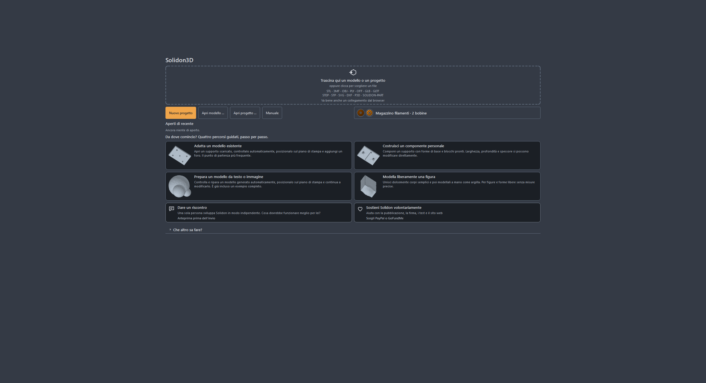
2. Trascinare un file sulla finestra. STL, 3MF, OBJ, GLB, PLY, OFF e STEP; in più SVG e DXF per disegni da estrudere. Se nel file non è annotata alcuna unità — in STL mai —, Solidon chiede invece di indovinare. Nel dubbio millimetri: quasi tutto in rete è in millimetri.
Se il file non è ancora sul disco, va bene anche il suo indirizzo: trascinare il collegamento di download dal browser sulla finestra, oppure File → Modello dalla rete — il campo è già riempito con ciò che sta negli appunti. Chi prende l'indirizzo della pagina del modello invece del file se lo sente dire.
3. Guardare il rapporto di verifica. A destra sta scritto cosa non va nel modello. Fori, facce doppie, triangoli rivolti al contrario — con i modelli scaricati è la regola, non l'eccezione. I rilievi più frequenti portano un pulsante che li risolve; dove non ce n'è uno, il rapporto dice almeno che cosa significa il rilievo.
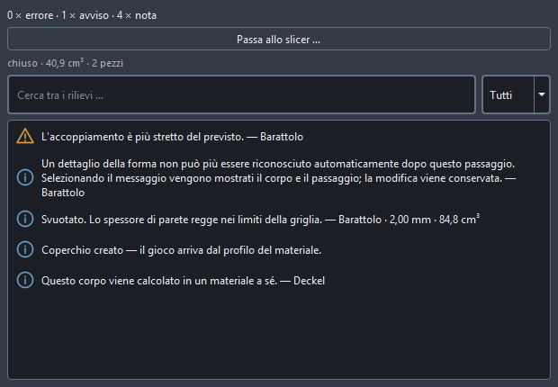
4. Riparare. Di solito basta l'azione proposta nel rapporto. Il modello resta quello che era — la riparazione è un passo nella cronologia e si può ritirare.
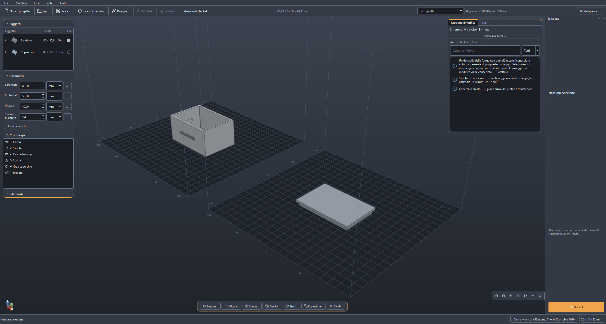
5. Puntare sulla faccia in cui deve andare il foro e fare clic destro. Il menu nomina esattamente le operazioni che si adattano a questa faccia — su una faccia piana, per esempio, Pratica un foro. Il clic destro raggiunge sempre la cosa più precisa sotto il puntatore, senza lavoro preliminare.
Il clic sinistro va un passo più lento, e questo è voluto: il primo seleziona il pezzo intero, il secondo il punto al suo interno — una faccia, un foro. Così si arriva anche al pezzo stesso, per spostarlo o ruotarlo. Esc torna indietro di un livello.
6. Inserire il diametro e applicare. Posizione e direzione sono già lì, perché la faccia era selezionata. Tutto il resto — tolleranza, risoluzione — sta dietro Altre impostazioni e di norma non si tocca.
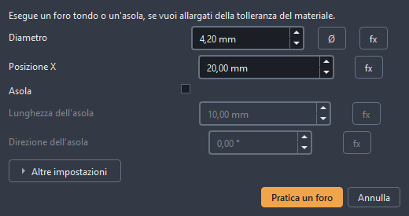
Il risultato: lo stesso corpo, un foro in più.
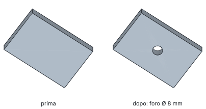
7. Se il foro siede nel posto sbagliato, viene spostato, non riforato. Un doppio clic sul passo nella cronologia lo riapre. Cambiare il numero, applicare, fatto. Questo vale anche la settimana prossima.
8. Esportare. File → Esporta, poi 3MF se lo slicer lo legge — altrimenti STL. Questo file va nello slicer, e lo slicer ne fa il G-Code.
Al primo giro non serve altro. Tutto il resto di questo manuale ne è l'ampliamento.
La finestra
Quale area della finestra risponde a quale domanda.
Tre zone, e nessuna di esse si nasconde.
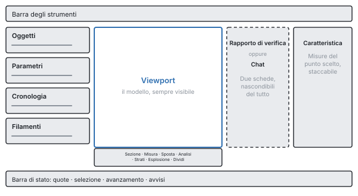
In alto la barra degli strumenti: Nuovo, Apri, Salva, Inserisci modello, Disegna — che ruota la vista perpendicolare al piano di disegno, il modello resta e arretra in trasparenza —, più Modella e Scheletro, che hanno entrambi bisogno di un corpo selezionato e lo dicono prima che tu clicchi. Escape ne esce da tutti e tre come da ogni altro strumento. I pulsanti portano solo il loro simbolo; il nome compare non appena il puntatore vi si ferma.
Sotto il modello la riga degli strumenti: Sezione, Misura, Sposta, Analisi, Strati, Esplosione, Dividi, da sinistra a destra su Alt+1 fino ad Alt+7. La maggior parte guarda soltanto; Sposta e Dividi cambiano davvero il modello, ed entrambi lo fanno come un passo nella cronologia.
A sinistra stanno l'albero degli oggetti, i parametri e la cronologia uno sotto l'altro, ogni sezione richiudibile. L'albero degli oggetti mostra che cosa c'è nella scena; l'elenco dei parametri le quote nominate del progetto; la cronologia ogni passo che ha portato allo stato attuale.
Al centro il modello. Il tasto sinistro del mouse seleziona, il destro o il centrale ruota, Maiusc e trascinamento sposta, la rotellina zooma verso il punto in cui sta il puntatore. Chi è abituato diversamente da un altro programma passa nelle impostazioni alla configurazione CAD o Blender.
A destra o la chat o il rapporto di verifica — mai entrambi, perché entrambi insieme non li legge nessuno. Se nasce un avviso, la vista passa da sola al rapporto. Un tasto nasconde l'intera colonna, e allora il modello è a schermo intero.
In basso la barra di stato: quote della selezione, avanzamento di un calcolo in corso, avvisi aperti.
Non ci sono modalità operative. Nessun passaggio tra «Modifica» e «Costruisci», nessun banco di lavoro — c'è un solo stato, ed è la scena.
Se cerchi qualcosa, apri la palette dei comandi. Trova ogni operazione tramite il suo nome e mostra la scorciatoia da tastiera lì accanto. Così le scorciatoie si imparano per strada, invece di impararle a memoria.
Guardare prima di stampare
Cosa segnala il rapporto di verifica, cosa mostrano le mappe di analisi, e quando conviene guardare.
Sullo schermo un modello ha quasi sempre un bell'aspetto. Se si lascia stampare sta scritto altrove — nello spessore di parete nel punto più sottile, nello sbalzo oltre il limite, nell'isola che comincia in aria. Cinque strumenti nella barra sotto la vista rispondono a questo, e nessuno di essi cambia qualcosa nel modello.
Misurare (barra degli strumenti, Misura) fissa due punti e mostra la distanza. Il puntatore si aggancia a spigoli e angoli, quindi non devi colpirli, basta avvicinarti. Per lo spessore di parete basta un clic su una faccia: Solidon manda un raggio verso l'interno e misura dove riesce. Una distanza misurata resta come quotatura finché non la togli — così si confrontano tre quote una accanto all'altra, invece di doverle ricordare.
La sezione (Sezione) mette un piano attraverso il modello e mostra ciò che sta dietro. La superficie di taglio viene disegnata chiusa, non come un buco aperto — una cavità si riconosce così come cavità e non come errore di visualizzazione. Il piano si trascina attraverso con il cursore.
Le mappe di analisi (Analisi) colorano il modello secondo un numero. Ce ne sono sette: Spessore di parete, Sbalzo, Fabbisogno di supporti e Curvatura rispondono alla domanda sulla stampabilità. Difetti della mesh mostra spigoli aperti e punti in cui si incontrano più di due facce — lì sta quasi sempre la causa, quando un'operazione booleana fallisce. Caratteristiche colora ciò che il riconoscimento ha fatto del corpo: quale faccia vale come foro, quale come tasca. Accoppiamenti mostra quali facce partecipano a un accoppiamento e quale di esse è violata. La legenda nomina sempre l'intervallo dei valori e la loro provenienza — una mappa senza scala è un bel quadretto. Un clic su un avviso nel rapporto di verifica porta la camera sul punto.
L'anteprima degli strati (Strati) mostra il modello come si scompone in strati. Il cursore ci passa attraverso; ciò che vedi è l'analisi degli strati propria di Solidon e non ciò che lo slicer calcolerà dopo. I due mondi di numeri restano indicati separatamente, così nessuno scambia una stima per una misura.
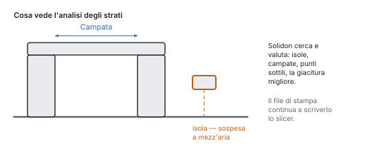
La vista esplosa (Esplosione) allontana più corpi tra loro, così si vede che cosa si incastra in che cosa. Sposta soltanto la visualizzazione — la pila e l'esportazione restano intatte.
Anche l'ombra sotto il modello dice qualcosa. Cade per ogni pezzo separatamente, non per l'intero corpo — un pezzo che durante il calcolo si è scomposto in più pezzi getta perciò più ombre, prima che lo si veda nella mesh stessa.
Nessuno di questi strumenti crea un'operazione. Sono occhiali, non utensili: non ci puoi rompere nulla, e qui un annullamento non ha nulla da ritirare.
Spostare e colorare
Spostare, ruotare e disporre gli oggetti — e assegnare facce a un filamento.
Due strade cambiano davvero il modello e non solo l'immagine: Sposta dalla barra degli strumenti e Colora dal menu. Entrambe mantengono la promessa della cronologia: ogni trascinamento e ogni assegnazione è un passo a sé, che Ctrl+Z annulla uno alla volta.
Sposta accende la maniglia nell'immagine, il gizmo: tre frecce per spostare, tre anelli per ruotare, un cubo per scalare in modo uniforme — etichettati X, Y, Z e S. Al rilascio il trascinamento sta nella cronologia come Sposta, Ruota o Scala, con numeri che lì si possono cambiare a posteriori come tutti gli altri. Aggancio alla griglia e aggancio angolare arrotondano ogni trascinamento al passo impostato — un millimetro e quindici gradi sono il valore predefinito, zero significa: nessun aggancio.
Durante il trascinamento il numero sta sopra l'immagine. Chi lo vuole esatto lo digita: la prima cifra prende il controllo del trascinamento, Enter applica esattamente il valore digitato — senza aggancio, perché chi digita intende l'esattezza —, ed Esc scarta l'intero trascinamento.
Se è selezionata una faccia, la maniglia siede sulla faccia. Un trascinamento la sposta nella sua direzione, e le pareti vicine crescono con lei (Sposta faccia) — dal blocco da 20 mm nasce un blocco da 25 mm, non una cassa spostata. Ciò che viene trascinato di traverso alla faccia decade: una faccia conosce solo avanti e indietro.
Il cubo scala in modo uniforme — per una quota obiettivo precisa c'è Porta a misura, per la deformazione per asse la finestra di Scala. E chi vuole accostare due pezzi non trascina al pixel, ma usa Allinea a caratteristica: faccia su faccia, foro su foro.
Colora esiste due volte, e la differenza è la dimensione: Colora l'intero pezzo prende tutto il corpo, Colora la faccia esattamente la faccia che si indica. Per una faccia la via più breve è il clic destro su di essa: la finestra la conosce già.
Si sceglie un filamento, non un numero: con nome e colore, dal proprio catalogo o creato al momento. In cima sta ciò che il corpo porta già — quasi sempre è quella la risposta. Nell'esportazione 3MF diventa il cambio filamento per la stampante; un pezzo senza filamento proprio mantiene il colore del corpo.
La cronologia vede entrambi esattamente come una voce di menu: le stesse operazioni, lo stesso annulla, la stessa possibilità di ripensarci.
Disegna
Disegnare con vincoli: linee, archi, condizioni, e cosa ne nasce dopo.
Per il contorno che nessun corpo di base sa dare. Un blocco con un foro non ha bisogno di un disegno — una piastra di base con un'apertura in cui entra un alimentatore sì.
Si comincia in alto, nella barra degli strumenti. Il quinto simbolo da sinistra è Disegna — i pulsanti lì non portano etichetta, il loro nome compare sul puntatore. Ruota la vista perpendicolare al piano di disegno: si disegna nel modello, non accanto. Cosa ne nasce lo decidi alla fine — non prima. Escape ne esce di nuovo, come da ogni altro strumento.
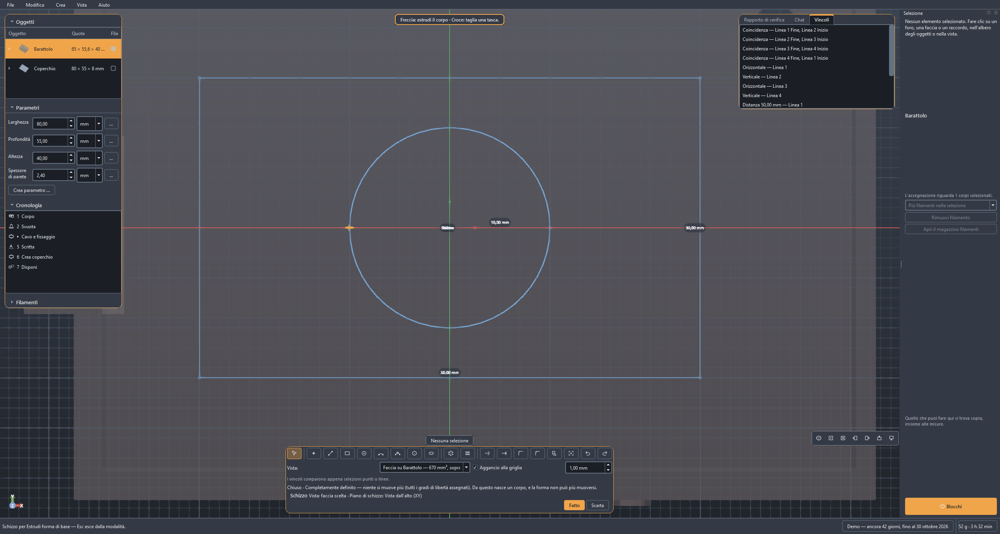
Prima il piano, poi la linea. XY giace piatto come il piatto di stampa, XZ e YZ stanno in verticale. Se nella scena c'è un corpo, le sue facce piane compaiono anch'esse nell'elenco — allora disegni direttamente sulla faccia superiore di un pezzo. La frase accanto alla scelta dice come stanno rispetto ad essa gli strati di stampa: su XY paralleli al disegno, sui piani verticali di traverso — e di traverso significa che una linea orizzontale nell'immagine sarà poi una giunzione. Con una faccia cliccata decide la sua inclinazione, e la frase la nomina: distesa, di traverso oppure obliqua rispetto alla stratificazione. Chi ha già la faccia sott'occhio non deve riconoscerla in questo elenco: clic destro su di essa nella finestra o nell'albero degli oggetti, Disegna su questa faccia, fatto.
Gli strumenti e i loro tasti: linea L, cerchio C, arco A, punto P, spline S, rifila T. Le cifre 1, 2 e 3 passano direttamente tra XY, XZ e YZ. Esc riporta alla selezione e interrompe un elemento appena iniziato. La linea prosegue come tratto continuo — la fine è l'inizio della successiva. Una spline raccoglie punti finché non dici che è finita: doppio clic, Enter, oppure un altro clic sull'ultimo punto.
I contorni già pronti sono lì. Sotto Forma di base: rettangolo (R), asola, cerchio, esagono — e i due che altrimenti sarebbero lavoro a mano, cerchio di fori e griglia di fori. Entrano come disegno con vincoli, non come mucchio di punti, e dopo si quotano come ciò che hai disegnato tu.
Vedere, scegliere, trascinare. Vale la stessa configurazione della finestra principale: il tasto destro o centrale del mouse ruota, Maiusc e trascinamento sposta, la rotellina zooma verso il punto in cui sta il puntatore. Chi ruota così resta ruotato — la vista si mette perpendicolare al piano di disegno una volta all'ingresso, e poi non più da sola. Adatta (Home) riporta tutto nell'immagine, e all'apertura è già successo: un disegno esistente riempie l'area, un foglio vuoto mostra l'intero volume di stampa. Con Seleziona, un trascinamento su un punto afferra quel punto e lo sposta; il risolutore adegua ciò che vi è appeso. Ctrl mentre fai clic raccoglie, e non è una finezza: Parallelo e Perpendicolare richiedono due linee, Simmetrico due punti e un asse. L'ordine dei clic conta — «A parallelo a B» non è «B parallelo ad A». Canc cancella la selezione insieme ai vincoli che vi erano appesi; se invece lo sguardo è sull'elenco dei vincoli, Canc elimina lì la voce. E Ctrl+Z vale anche qui, per l'ultimo tratto sul foglio e non per l'ultimo passo nella cronologia.
Un clic vicino a un punto esistente lo aggancia. È più di una comodità: i due punti ricevono una Coincidenza e restano insieme, anche se più tardi si sposta qualcos'altro. Due punti che hanno le stesse coordinate solo per caso non lo fanno.
E dove non c'è alcun punto, aggancia la griglia. Le linee sullo sfondo seguono lo zoom: procedono nella serie 1, 2 e 5 e diventano più grossolane non appena starebbero più vicine di venti pixel — una griglia le cui linee si confondono non aiuta nessuno. Con Aggancia alla griglia attivo, ogni clic cade sul passo mostrato in quel momento, e su quello più vicino; troncato, ogni punto risulterebbe spostato nella stessa direzione. I punti esistenti hanno la precedenza: dove ce n'è uno vicino vince lui, perché porta con sé una coincidenza e la griglia solo un numero tondo.
Il passo si può fissare. Digitane uno e resta, per quanto tu zoomi; per un pezzo pensato a passi di due millimetri è metà della costruzione. Girato tutto in basso, nel campo compare Automatico e il passo torna a seguire lo zoom.
Quotare mentre si disegna. Con linea e cerchio, dopo il primo clic diventa attivo un campo della quota proprio accanto al puntatore e non nella barra: digita lunghezza o diametro, Enter — la direzione viene dal puntatore, il numero dal campo, e resta lì come vincolo. In un secondo momento lo stesso si fa con D su due punti selezionati, e lì può stare un'espressione: @larghezza/2 lega la quota a un parametro di progetto invece di ripeterla.
I vincoli tengono il disegno, non le coordinate. Seleziona qualcosa, poi il pulsante — oppure il tasto destro del mouse sul posto. Ce ne sono dieci: distanza, coincidenza, orizzontale, verticale, parallelo, perpendicolare, tangente, simmetrico, fisso e quota di riferimento, che misura senza tenere. Ciò che non si adatta alla selezione è in grigio. A destra stanno tutti in un elenco; chi passa il puntatore su una voce vede accendersi i punti che essa tiene, e Canc la toglie.
![La modalità schizzo: in alto gli strumenti di disegno con le loro scorciatoie — linea L, cerchio C, arco A, spline S —, sotto la scelta del piano con l'indicazione di come vi giacciono gli strati. Nell'area di disegno un rettangolo quotato da 40 mm con un cerchio al suo interno, il bordo del volume di stampa tratteggiato, un punto agganciato evidenziato. A destra l'elenco dei vincoli — orizzontale, perpendicolare, distanza, coincidenza, tangente — con i punti che ciascuno tiene. In basso la riga di stato: determinato, tutti i gradi di libertà sono assegnati.](../handbuch/it/sketch-editor-dark.svg)
In basso sta scritto quanto è saldo il disegno. Determinato significa che ogni numero è assegnato e non si sposta più nulla. «Quattro gradi di libertà sono ancora liberi» significa che quattro cose non sono ancora fissate — lo schizzo funziona lo stesso, è soltanto ancora spostabile. Se due quote si contraddicono, Solidon dice quali, e resta l'ultima posizione valida: un vincolo impossibile non distrugge ciò che è stato disegnato.
Cambiare senza ridisegnare: Rifila taglia via la metà su cui fai clic, Prolunga la fa crescere, Sposta parallelamente (O) posa un contorno accanto a distanza — negativo va verso l'interno —, Specchia ribalta la selezione sull'asse X o sull'asse Y. Geometria di costruzione (X) fa di una linea una linea che porta vincoli ma non forma alcun profilo: la linea mediana a cui qualcosa è appeso simmetricamente non deve essere estrusa insieme. E Proietta porta nel disegno gli spigoli dei corpi esistenti su questo piano — il modo per allineare qualcosa su un pezzo importato, invece di misurarlo e digitarlo.
Il bordo del volume di stampa è disegnato — tratteggiato, con la sua quota accanto, e chi disegna oltre lo legge sulla stessa linea: lo schizzo sporge oltre. L'area di disegno è così il punto più precoce in cui si nota che un pezzo non entra sul piatto — prima di ogni rapporto di verifica. Con un pezzo piccolo la cornice sta fuori dall'immagine, ed è voluto: entrarci ci entra comunque. Quando il disegno diventa più grande del piatto, la cornice compare da sé nell'immagine.
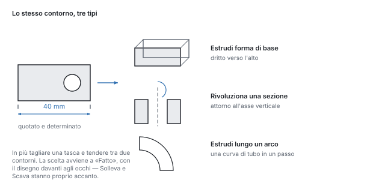
Alla fine Solidon chiede cosa ne debba nascere. Il pulsante Fine mostra i cinque tipi con una frase ciascuno: estrudere, tagliare dentro come tasca, ruotare attorno all'asse verticale, condurre lungo un arco, oppure tendere tra due contorni. Torna al disegno c'è anche lì — non butta via nulla, riapre lo stesso disegno.
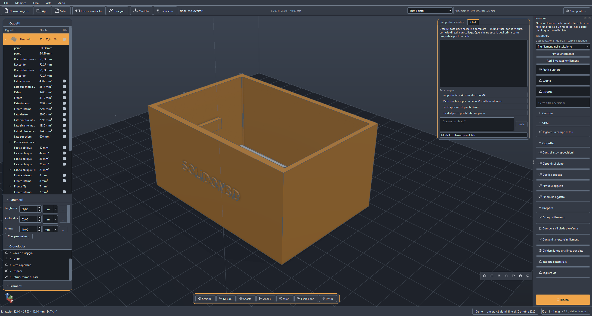
Dopo, il disegno è un valore come ogni altro. Sta come parametro dell'operazione nella cronologia, e un doppio clic sul passo lo riapre tramite Disegna …. Una linea che sta due millimetri fuori posto viene spostata — l'operazione sopra ricalcola, e il resto del progetto resta com'era.
I contorni entrano nel secondo kernel di calcolo come curve esatte: un cerchio disegnato diventa un cilindro tondo e non un poligono con molti angoli.
Le quattro vie
Adattare, costruire, generare, modellare: quattro vie nella stessa scena.
Quasi ogni compito prende una di quattro strade. Per ognuna c'è pronto un progetto di esempio — nella schermata iniziale, e ognuno si apre con un percorso guidato: a destra sta scritto passo per passo che cosa provare, e il percorso si accorge da sé quando un passo è fatto.
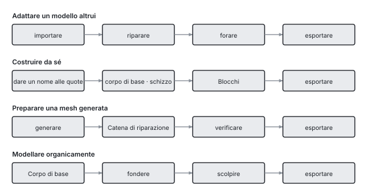
Strada 1 — adattare un modello altrui. Qualcosa di scaricato che quasi ci va: importare, riparare, forare, esportare. La strada più frequente, e quella in cui conta la riparazione.
Strada 2 — costruire da sé. Qualcosa di nuovo a partire da corpi di base, blocchi e disegni, con parametri con un nome: larghezza, profondità, spessore. Se cambia un numero, cambia il pezzo. Ciò che nessun corpo di base sa dare si disegna — il simbolo Disegna in alto nella barra degli strumenti, descritto nel capitolo precedente.
Strada 3 — preparare un modello generato. Ciò che consegna un modello per immagini è una superficie, non una costruzione. Passa per la catena di riparazione, e i fori nascono dopo, come passi a sé — non misurando la mesh.
Via 4 — modellare una figura. Una forma che non si può quotare: composta a grandi linee con primitive, fusa dolcemente e poi modellata a mano. Il suo capitolo sta più in basso; ciò che la distingue dalle altre tre è che qui conta un gesto e non un numero.
Modella
Modellare a mano: e perché un'intera sessione resta un passo.
Alcune forme non si possono quotare. Un manico che deve stare in mano, una figura, un passaggio cresciuto: per questo c'è il pennello.
La strada ha tre tappe, e la prima si salta volentieri. Prima una forma grossolana da primitive, fuse dolcemente («Fondi dolcemente» nel menu «Modifica»); poi «Affina gli spigoli in modo uniforme», perché i vertici stiano ovunque allo stesso modo; infine «Modella». Chi salta la seconda tappa dipinge su una mesh che non può seguire il pennello: la barra lo dice appena la sessione è aperta.
L'intera sessione è un passo della cronologia. Non un passo per tratto: una figura sono diverse migliaia di tratti, e una cronologia con quattromila voci non è più tale. Ctrl+Z annulla un tratto durante la sessione, l'intera sessione dopo.
Sei strumenti. «Aggiungi» e «Scava» sono la stessa cosa a segno invertito. «Leviga», «Gonfia» e «Appiattisci» leggono ciò che li precede e costano quindi un passaggio in più ciascuno — la barra mostra quanti sono. «Pizzica» tira verso il centro del tratto e fa spigoli.
Dentro una tappa l'ordine non conta. Due tratti sullo stesso punto si sommano sulla superficie di partenza, invece che il secondo poggi sul risultato del primo. Chi non lo vuole imposta «Riparti da capo»: allora il tratto successivo comincia su ciò che c'è. L'interruttore vale per un tratto.
La simmetria si cambia in seguito. Sta sull'operazione e non sul singolo tratto: una sessione finita si può specchiare così. Si specchia rispetto all'origine dell'oggetto, non al suo baricentro, che si sposta modellando.
Quando questo strumento non è quello giusto. Su un pezzo ancora da quotare: un tratto sta in un punto dello spazio, e chi cambia la forma sotto gli toglie la superficie. Per un passaggio fra due corpi è meglio «Fondi dolcemente»: tre numeri invece di cento tratti, e modificabile in ogni momento. E chi modella un busto è servito meglio da un programma fatto per questo; sei pennelli sono sei pennelli.
Ciò che questo programma sa fare e gli altri no: mentre modelli, lo spessore di parete corre insieme. I punti troppo sottili compaiono come numero nella barra, prima che lo slicer li trovi.
La cronologia
Perché ogni passo resta modificabile e cosa tiene insieme una transazione.
Ogni operazione sta nella cronologia, e lì resta modificabile. È la differenza da cui dipende tutto il resto: qui un modello non è una mesh di triangoli, ma la lista dei passi da cui è nato.
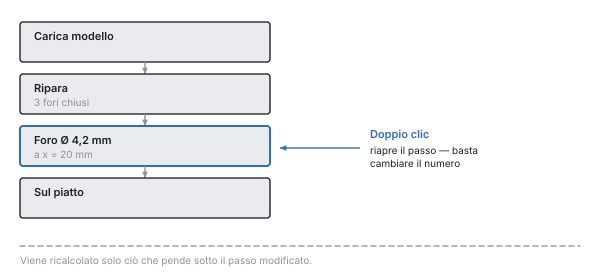
Un doppio clic su un passo lo riapre — con i valori che stanno nel file. Chi vuole spostare un foro di due millimetri cambia il numero; viene ricalcolato solo ciò che pende al di sotto. Anche la modifica successiva è annullabile: Ctrl+Z ripristina il valore precedente, come per ogni altro passo.
Più passi si possono selezionare insieme — Ctrl o Maiusc mentre fai clic. È esattamente il ritaglio che riceve un blocco proprio (Blocchi propri), e senza selezione vale l'intera pila.
«Modifica questo passaggio» sta anche sulla caratteristica stessa, nel menu contestuale della vista e nell'albero degli oggetti: la via di ritorno dal risultato al passo, senza cercare la riga giusta nella cronologia. Per questo l'albero degli oggetti raggruppa sotto il suo nome ciò che è nato da un blocco — sei raccordi restano così accanto al loro gancio per pannello forato, e non in un elenco piatto.
Annulla ritira una transazione intera, non mezzo passo. Una proposta della chat è esattamente una transazione — un annulla la ritira per intero.
Due limiti sono voluti. I passi ritirati decadono appena ne arriva uno nuovo: non esistono rami. E una modifica che cambia il numero degli oggetti mentre passi successivi ci lavorano viene respinta — i nuovi corpi non sono i vecchi, e un errore alla fine dovuto a un numero all'inizio è un errore che nessuno sa più ricondurre.
Il clic prepara il terreno. Chi seleziona una faccia nella finestra e poi richiama un'operazione trova posizione e asse già inseriti. La dimensione no: una svasatura prende la testa della vite, non il diametro del foro su cui siede. Per un foro cliccato, la finestra dice anche a quale misura normalizzata corrisponde il diametro misurato — e dove nessuna corrisponde, chiede invece di inventarne una.
Parametri ed espressioni
Quote con nome invece di numeri nel modello, con espressioni tra di esse.
Un progetto ha parametri con un nome — larghezza, profondita, spessore_parete —, e le operazioni possono calcolare con essi invece che con numeri fissi.
Perché questo è più di una comodità. Un numero che sta in sette punti è sette numeri: se lo cambi, ne cambi sei e ti sfugge il settimo. Un parametro è un numero in un punto solo. Gira larghezza, e tutto ciò che ne dipende segue in un colpo — il foro al centro resta al centro, perché lì sta =@larghezza/2 e non «35».
Ecco come se ne crea uno. A sinistra sotto Parametri clicca su Crea parametro, inserisci nome e valore.
Ed ecco come entra in una quota. Accanto a ogni campo numerico c'è un pulsante fx. Commuta il campo: spento c'è un numero con le frecce, acceso c'è un'espressione. Solo allora il campo accetta =@larghezza/2 — il segno di uguale trasforma il campo in un'espressione, la chiocciola rimanda a un parametro. Digita @ e il campo propone i nomi dei tuoi parametri, e sotto sta scritto cosa è consentito.
Il nome nell'espressione non è sempre quello dell'elenco. Un parametro ha il nome con cui è stato creato e un'etichetta che può essere tradotta — non devono per forza essere la stessa parola. L'elenco dei suggerimenti mostra quello giusto; chi lo usa non deve mai conoscere la differenza.
Limiti, unità ed espressione si possono cambiare in seguito. Clic destro sul parametro, Cambiare i limiti … — ed è annullabile come ogni altra modifica. Un limite superiore impostato troppo stretto altrimenti blocca un campo senza dire nulla.
Che cosa può stare in un'espressione: le quattro operazioni di base, le parentesi, min, max, abs, round e i riferimenti ad altri parametri. =@larghezza/2 - @spessore_parete è consentito, =max(@larghezza, 40) pure.
Tutto il resto non è consentito, ed è voluto: l'espressione viene calcolata da un valutatore proprio, non da Python. Un file di progetto è un file e non un programma — viaggia tra le persone come segnalazione di errore, e ciò che vi sta dentro non deve eseguire nulla. Non cambia niente nemmeno un modello linguistico che ha scritto l'espressione.
I riferimenti circolari vengono riconosciuti e nominati. Se a punta a b e b ad a, Solidon lo dice, invece di calcolare fino al fondo.
Si calcola sempre in millimetri e in doppia precisione. Viene arrotondato solo ciò che si mostra — quello che leggi come «40,00 mm» nel nucleo è un numero con tutte le sue cifre.
Materiale, tolleranze, accoppiamenti
Da dove viene il gioco che serve a un coperchio — e perché non viene stimato.
Il pezzo che distingue Solidon da uno slicer.
Un pezzo stampato non è mai grande quanto disegnato. La plastica ritira raffreddandosi, un foro da 5 mm esce più stretto, e lo strato più basso viene schiacciato più largo di tutti quelli sopra. Chi vuole infilare due pezzi uno nell'altro deve metterlo in conto — ed è esattamente ciò che Solidon toglie di mano.
Il gioco sta nel profilo del materiale, non nel modello. Chi vuole infilare una spina in un foro non inserisce 0,2 — dice accoppiamento, e il numero arriva dal profilo del materiale con cui si stampa.
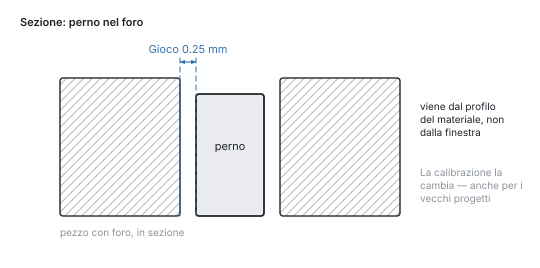
Per questo una calibrazione agisce all'indietro. Sotto Modifica → Calibra materiale si inserisce il valore misurato. Da quel momento vale per ogni accoppiamento — anche per quelli nei progetti nati prima.
Si stampa ciò che si misura, non ciò che si stima. Il corpo di prova delle tolleranze mette su un piatto perni e fori con gioco scalato: si stampa una volta, si prova, e il valore è fissato. La scala degli spessori di parete e il ventaglio degli sbalzi fanno lo stesso per lo spessore minimo di parete e per l'angolo da cui questa stampante ha davvero bisogno di supporti — invece della regola empirica dei 45 gradi.

Il primo strato è un caso a parte. Viene premuto contro il piatto e si allarga verso l'esterno. Per un accoppiamento che sta in basso sul pezzo, è la differenza tra «entra» e «non entra».
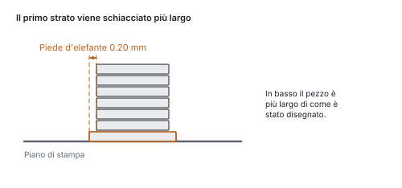
Il provino ritaglia un cubo attorno a un punto invece di ricostruirlo. Ciò che viene stampato è la geometria vera con la tolleranza vera: due minuti invece di due ore, e il risultato vale per il pezzo.
Una scena può avere più materiali. Una guarnizione in TPU dentro un involucro in PETG ritira in modo diverso e vuole più gioco. Con Assegna materiale il singolo corpo riceve il proprio profilo, e tolleranze, piede d'elefante e verifica degli accoppiamenti calcolano con quello.
I blocchi
Collegamenti collaudati dalla libreria invece di geometria costruita da sé.
Mettere un esagono in una parete tanto in profondità che ci entri un dado M4 e la vite faccia comunque presa è mezz'ora di lavoro — la prima volta. La libreria dei blocchi te la toglie: clicca sulla faccia, scegli il blocco, scegli la misura. Senza un corpo selezionato il catalogo resta bloccato e dice perché — sfogliarlo si può comunque.
Le quote vengono da una tabella, non dalla memoria. Che apertura di chiave abbia un esagono M4, quanto in profondità sieda un inserto a caldo, quanto larga possa essere una cerniera a film — sono cose consultate, non stimate.
Sede per dado — la tasca per un dado esagonale che si inserisce durante la stampa. Il modo più frequente di ottenere su un pezzo stampato una filettatura che regge.

Inserto a caldo — il foro a gradini per una boccola di ottone che si fonde dentro con il saldatore. Più laborioso della sede per dado, in compenso apribile quante volte si vuole.

Dente di scatto — il braccio elastico che cede durante l'unione e poi si aggancia. Un coperchio che tiene senza vite.

Cerniera a film — un punto così sottile che si piega invece di rompersi. Lo snodo si stampa insieme al pezzo, non c'è nulla da montare.
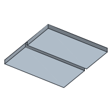
Gancio per pannello forato — da uno a sei ganci direttamente sul pezzo, nel passo di un pannello SKÅDIS; la piastra posteriore solo su richiesta. Si infila dall'alto e poi si tira verso il basso: un dente elastico di ritegno si aggancia e tiene saldo il pezzo anche se qualcuno lo tira. Per staccarlo bisogna premere il dente attraverso la fessura — chi stacca spesso il pezzo lo disattiva e riceve invece il gancio semplice, da sollevare e togliere. Si stampa sdraiato, così che il dente fletta attraverso i suoi strati.

Occhio di cerniera — una linguetta forata. Due di questi e una spina formano uno snodo che ruota; la cerniera a film qui sopra si piega. Espressamente mezza cerniera.
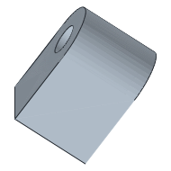
Fazzoletto d'angolo — il triangolo in uno spigolo interno che tiene due pareti ad angolo retto. Per una singola parete morbida è la nervatura di rinforzo quella giusta.
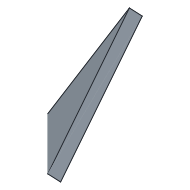
Piedino — un piedino stampato oppure la sede per uno di gomma acquistato, a scelta. Lo smusso è rivolto verso il basso, così che il piede di elefante del primo strato si schiacci nel vuoto.
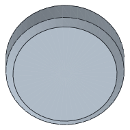
Clip per cavo — la staffa su una faccia la cui apertura è più stretta del cavo. Guida, ma non trattiene contro la trazione; per questo c'è il passacavo.
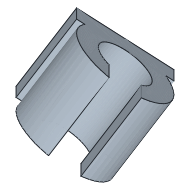
Si aggiungono il foro per vite, la sede per magnete, il passacavo, la nervatura, il foro a serratura, la filettatura stampata, la linguetta per profilato, il supporto a parete, l'aggancio a scatto, la spina e il foro di accoppiamento, il connettore a scatto per una giunzione e i provini del capitolo precedente. Il catalogo li ordina in gruppi e mostra un'immagine di ciascuno — una biblioteca che non si vede per l'utente non esiste.
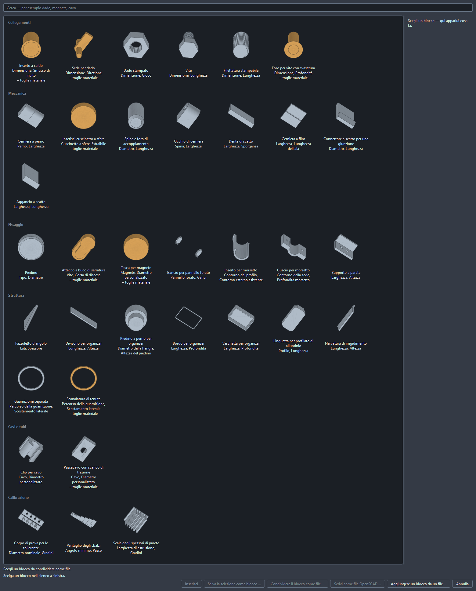
Ogni blocco resta modificabile come qualsiasi altra operazione. Sta nella cronologia, le sue quote si possono correggere in seguito, e i punti su cui si appoggia mantengono il loro nome.
Blocchi propri
Archiviare un pezzo costruito da te in modo che la prossima volta sia già pronto.
Il supporto per il banco da lavoro è costato una serata. La prossima volta dovrebbe essere una voce di menu, con una larghezza regolabile, perché la prossima tavola è più spessa.
Scegli prima nella cronologia che cosa deve partecipare. Lì si possono selezionare più passi — Ctrl o Maiusc mentre fai clic, come ovunque —, e sono esattamente questi a finire nel blocco. Senza selezione vale l'intera pila, ed è il caso frequente: chi ha appena costruito il suo pezzo di solito intende comunque tutto. La finestra della ricetta scrive nella sua intestazione che cosa ha ricevuto, perché questo valore predefinito non valga in silenzio.
La strada comincia nel catalogo dei blocchi (File → Catalogo dei blocchi …, Ctrl+K), non nel menu dei blocchi: lì sta Salva la selezione come blocco …. Quello che hai costruito diventa così una voce come la sede per dado o il dente a scatto: con immagine di anteprima, con campi da regolare e con punti su cui in seguito si potrà allineare qualcosa.
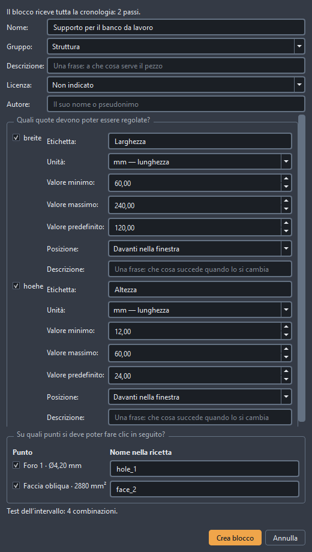
Prima servono parametri di progetto. È l'unica condizione su cui altrimenti fallisce: diventa regolabile esattamente ciò che nel progetto ha un nome. Chi ha scritto la larghezza del suo supporto come numero fisso nel parallelepipedo ottiene un blocco che sa fare esattamente una larghezza. Crea prima come parametri i valori che devono cambiare e collega ad essi le quote — il capitolo Parametri ed espressioni mostra come. Il pulsante nel catalogo resta bloccato finché non è fatto e dice accanto che cosa gli manca.
La finestra chiede cinque cose. Un nome con cui il blocco compare nel catalogo. Un gruppo in cui viene classificato. Una descrizione che compare nella colonna dei dettagli del catalogo. Per ogni parametro, se debba essere regolabile: con etichetta, unità, valore minimo e massimo, valore predefinito e una frase su che cosa succede quando lo si cambia. E per ogni caratteristica rilevata, se in seguito ci si debba poter fare clic: un foro su cui viene allineato un altro pezzo, una faccia su cui si appoggia qualcosa. Entrambe le cose sono obbligatorie e non solo un'offerta: senza almeno una quota liberata e almeno un punto liberato, Crea blocco resta bloccato, con la frase su che cosa manca.
Alla creazione si calcola, non si salva soltanto. Il blocco viene costruito una volta a ogni angolo dell'intervallo che hai indicato: larghezza minima con altezza massima e così via. Se da qualche parte non esce un corpo utilizzabile, questo compare sulla voce nel catalogo. Un blocco che si sfalda a 8 mm è meglio conoscerlo prima del primo inserimento che dopo.
È tuo e resta su questo computer. Non viene caricato nulla, non viene condiviso nulla. Nel catalogo compare accanto a quelli forniti, con un contrassegno. Se consegni un progetto in cui viene usato, viaggia con esso come ricetta: come elenco di passaggi e valori, non come programma. Se il tuo computer porta già un blocco con lo stesso nome, vince il tuo, e quello arrivato ne riceve uno proprio.
Cambiare significa salvare di nuovo. Salva con lo stesso nome — il pulsante dice allora Sostituisci blocco, e file, voce del catalogo e calcolo vengono scambiati insieme. Una ricetta ha una versione che deriva dal suo contenuto. Se in seguito apri un progetto che ne ha usata una più vecchia, te lo dice — la versione vecchia viaggia con il progetto e sta nel catalogo come voce separata, e decidi tu quale vale. Se non cambia nulla, nemmeno nessuno dice niente.
Sul piano e fuori
Dal modello finito alla consegna allo slicer.
Disponi sul piano affianca gli oggetti e inizia un nuovo piatto non appena quello corrente è pieno. Ciò che non entra nemmeno così non viene omesso, ma segnalato.
Troppo grande per il piatto? Dividi taglia dove si indica; Dividi automaticamente taglia finché ogni pezzo non entra. Il piano di taglio viene cercato, non indovinato, in ogni superficie di taglio vanno due spine, e ogni taglio resta un numero che si può cambiare in seguito.
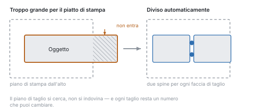
Ciò che cresce inclinato verso l'esterno prima o poi ha bisogno di supporti. Quanto inclinato dipende dalla stampante e non da una regola empirica — per questo il ventaglio degli sbalzi lo misura.
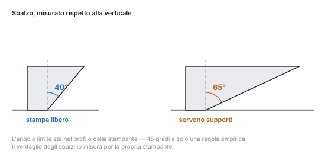
Le pareti troppo sottili non si stampano. Meno di due cordoni affiancati non regge nulla e si strappa non appena si tolgono i supporti.
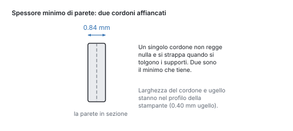
Si esporta in STL, 3MF o STEP. 3MF è ciò che gli slicer preferiscono, e porta con sé gli slot dei materiali come gruppi di colore; STL non conosce il colore e di conseguenza lo perde. STEP esiste per i corpi esatti, con facce e spigoli veri. In più OBJ e PLY, per i programmi che richiedono l'uno o l'altro.
Per far vedere c'è GLB. Non per stampare — non conosce alcuna unità — ma per inviare: colori e nome viaggiano insieme, e il destinatario ruota il pezzo nel browser senza installare nulla.
Lo slicer resta fuori. L'analisi degli strati cerca e valuta — isole, campate, punti sottili, l'orientamento migliore — ma il file di stampa lo scrive lo slicer. Dove entrambi danno numeri, viene sempre indicato quale proviene da dove.
Quando il pezzo non entra sul piano
Dividere, mettere le spine e disporre, quando il volume di stampa non basta.
Un volume di stampa è finito, e il pezzo che serve a volte non lo è. Allora si divide — e la domanda non è se, ma dove e come le metà tornano insieme.
La via più breve è lo strumento Dividi in fondo alla riga degli strumenti (Alt+7). Due clic sul pezzo tracciano una linea, e si divide tra i due — dritto verso il fondo dello schermo. Chi vede dove deve stare la giunzione non deve più tradurre quel punto in una coordinata. La casella Preparare per l'incastro è spuntata fin dall'inizio: spine in una metà, i fori corrispondenti nell'altra. Accanto sta ciò che le tiene insieme:
- Tonda stampa meglio e ne servono due, altrimenti le metà si possono ruotare l'una contro l'altra.
- Esagonale tiene già da sola contro la rotazione.
- Coda di rondine tiene inoltre contro lo sfilamento trasversale alla giunzione: dietro è più stretta che davanti.
- Scatto si aggancia: un braccio elastico in una metà, una tasca con risalto nell'altra. Tiene senza colla, e le metà si separano di nuovo. Per questo serve spazio: la giunzione deve dare almeno 5,4 mm, altrimenti il braccio sarebbe troppo corto per flettere. Se è più stretta, restano spine tonde, e il rapporto dice perché.
Prepara → Dividi automaticamente toglie di mezzo anche la ricerca. Il piano di taglio viene cercato, non indovinato: attraverso la stessa analisi degli strati della ricerca dell'orientamento, e si valutano tre cose. Una cucitura fatta di un solo contorno è migliore di una che si sfalda in cinque traversini sottili. Un andamento prismatico — la sezione cambia appena nell'arco di un millimetro — si incolla in modo più pulito di un'obliqua. E le metà dovrebbero essere di dimensioni simili. Il numero dei contorni pesa di più: una cucitura in più traversini è peggio di qualsiasi squilibrio.
In ogni superficie di taglio vanno due spine. Il loro diametro viene dalla superficie, il loro gioco dal profilo del materiale calibrato — non da un numero indovinato. Per ogni spina nasce una coppia di accoppiamento, che viene verificata a ogni valutazione. Due spine invece di una, così le metà non si possono ruotare l'una contro l'altra.
Ogni taglio è un'operazione a sé. Il piano di taglio resta così un numero che si può spostare in seguito, e un annullamento ritira un singolo taglio invece dell'intera divisione.
Il cursore «Esplosione» sotto la vista allontana i pezzi per guardarli — sposta soltanto la visualizzazione. Ciò che dice la pila e ciò che viene esportato resta dov'è.
Chi preferisce digitare il piano invece di indicarlo prende Prepara → Dividere e inserisce asse e posizione. La stessa operazione, solo senza la ricerca davanti; zero spine significa lì: solo tagliare.
Come si chiamano le metà dice quale è quale. Dopo la spinatura nell'albero degli oggetti stanno «… A · Spine» e «… B · Fori» — all'esportazione il nome del file è l'unica indicazione su quale dei due pezzi si ha in mano.
Provare invece di indovinare: varianti e calibrazione
Stampare più quote una accanto all'altra e adottare il valore misurato.
Il numero che decide un accoppiamento è il gioco — e dipende dalla stampante, dal materiale e dall'ugello. Lo si indovina una volta sola; dopo lo si misura.
La strada per arrivarci è un pezzo di prova. Sotto Blocchi → Calibrazione → Corpo di prova per le tolleranze nasce una serie di perni e fori con gioco scalato — di serie quattro gradini a partire da 0,10 mm, ciascuno 0,05 mm più in là, quindi fino a 0,25 mm. Nella finestra si possono cambiare entrambe le cose, se l'intervallo non è quello giusto. Stampalo una volta, provali tutti, ricorda il valore che entra scorrevole ma senza gioco.
Questo valore va nel profilo del materiale, non nel modello: Modifica → Calibra materiale. Poiché nel programma ogni tolleranza è un riferimento e non un numero, dopo ci fa i conti anche un pezzo nato prima della calibrazione. Un coperchio della settimana scorsa, dopo l'inserimento, va meglio senza che nessuno lo tocchi.
Lo stesso esiste per gli spessori di parete (scala delle pareti) e per gli sbalzi (ventaglio degli sbalzi) — gli altri due numeri che altrimenti si tirano a stima.
Quando un numero non dipende dal materiale ma dal pezzo, aiuta il generatore di varianti: Modifica → Genera varianti fa correre un parametro di progetto attraverso un intervallo e dispone le esecuzioni una accanto all'altra. Cinque diametri d'impugnatura su un piatto, una stampa, una decisione. La pila resta intatta — le varianti sono un'uscita, non una modifica al progetto.
La chat
Come si parla con l'agente, cosa vede e cosa costa una proposta.
La chat chiama le stesse operazioni che stanno nei menu — è una seconda mano sullo stesso strumento e non una seconda via per aggirarlo.
Da questo seguono due cose. Ogni proposta è esattamente una transazione: un annulla la ritira per intero, mai a metà. E la chat non calcola geometria — sceglie operazioni e valori, a calcolare è il programma.
La sequenza è sempre la stessa. Scrivi ciò che vuoi. La chat risponde con una proposta — un elenco di operazioni, non ancora eseguite. La vista mostra in blu e arancione ciò che si aggiungerebbe e ciò che sparirebbe. Solo Applica la inserisce nella cronologia; Scarta non lascia nulla.
Le sono state date tre regole, e non sono negoziabili: blocchi prima delle forme costruite a mano, parametri con nome prima dei numeri digitati — e chiedere prima di indovinare. Se la tua richiesta ha due letture, arriva una domanda e non un risultato.
Ciò che vede non è la cronologia grezza ma una scheda: quote, caratteristiche riconosciute, parametri di progetto, la selezione corrente, il rapporto di verifica. Un contributo annullato conta come scartato — dopo un annulla non argomenta più con uno stato che non esiste più.
Su ogni transazione sta scritto da dove viene (§26.4): modello, versione del prompt di sistema, versione della raccolta di regole. Chi tra sei mesi vuole sapere perché un foro sta lì, trova la risposta nella cronologia.
Le serve un modello: o una chiave propria (Modifica → Configura la chat, custodita nel portachiavi di sistema, mai nel file di progetto) o un Ollama locale. Per le chiamate agli strumenti deve essere abbastanza grande; sotto i 7B falliscono in modo riproducibile.
Tutto il resto di Solidon fa a meno del modello linguistico. Senza chiave la chat è in grigio e dice in una frase il perché — non succede altro.
Farsi generare un modello
Una mesh da testo o immagine — e ciò che serve dopo per renderla stampabile.
La terza strada (§2.2): descrivi un pezzo o metti lì un'immagine, e un generatore ne fa una mesh. File → Genera modello.
Il calcolo non avviene in Solidon, ma in un ComfyUI locale sulla porta 8188. Se non ce n'è uno in esecuzione, la voce resta in grigio e dice perché; tutto il resto continua a funzionare. Quali nodi vengono usati sta scritto in due file accanto al programma — chi ha un altro generatore sostituisce il file, non il codice sorgente.
Ciò che torna indietro è una superficie, non una costruzione. È la frase più importante su questa strada. Una mesh generata non ha fori, non ha accoppiamenti e spesso non è a tenuta stagna — ha una forma. Fori e accoppiamenti nascono dopo, come operazioni a sé, non misurando la mesh.
I modelli non sono nostri, e nemmeno le loro licenze. Quale modello usi ComfyUI lo decidi tu — Solidon non ne fornisce alcuno. Il flusso in dotazione usa TripoSG, la cui licenza MIT qui non lascia nulla in sospeso; il più diffuso Hunyuan3D per l'Unione Europea è espressamente non licenziato. Il flusso nomina ruoli e non nomi di file: impiegare un altro modello significa installarlo, nient'altro.
Il generato diventa una fonte, non un'operazione. Un generatore non è una funzione: la stessa richiesta, dopo un cambio di modello, restituisce qualcos'altro. I byte stanno perciò nel progetto come un file trascinato dentro, e la pila sopra è quella solita — Carica, poi Ripara. Richiesta e seme stanno nella fonte, così il file dice da dove viene la geometria.
La catena di riparazione parte senza chiedere, ma come passaggio a sé: visibile nella cronologia, visibile nel rapporto, annullabile. Le mesh generate sono raramente chiuse, e ciò che serve loro è sempre lo stesso — chiudere i fori, saldare i punti, raddrizzare le normali.
Lo stesso seme dà lo stesso risultato, per quanto lo consenta il modello dall'altra parte. Sta nella finestra di dialogo e viene salvato insieme al progetto.
Configurare i programmi aggiuntivi
I tre programmi che Solidon può usare: cosa porta ognuno e cosa resta da fare dopo l’installazione.
Nessuno di questi è obbligatorio. Senza tutti e tre l’intero percorso principale funziona comunque: leggere un modello, modificarlo, verificarlo, esportarlo. Ciò che manca sono singole funzioni — e questa pagina dice quali.
L’elenco sta in Aiuto → Programmi aggiuntivi. Ogni riga indica lo scopo, lo stato e la posizione; dove Solidon può installare da sé c’è un pulsante. Si installa solo se qualcuno lo preme.
Su Windows questo passa per winget, su macOS per Homebrew, su Linux per Flatpak — e sempre senza diritti di amministratore. Se manca il gestore di pacchetti, accanto c’è il comando da copiare insieme alla pagina del produttore.
Dove qualcosa sta in un posto insolito aiuta Indica posizione …: nessuna procedura di ricerca trova un’installazione portatile su un secondo disco, e da quel momento quell’indicazione vince sempre.
Lo slicer
Per il file di stampa e il controllo incrociato dal G-code. Vengono riconosciuti tutti i più usati: PrusaSlicer, OrcaSlicer, ElegooSlicer, BambuStudio, Cura. Solidon legge anche il suo profilo di stampante e al primo avvio propone la stampante che lo slicer aveva per ultima.
Ollama — per la chat senza una chiave propria
Qui i passi sono tre, e il primo è il più piccolo. Installato, Ollama non porta con sé alcun modello e non è detto che sia in esecuzione: entrambe le cose le risolve Modifica → Configura la chat:
1. È in esecuzione? Il dialogo lo dice in una frase. Se compare «installato ma non in esecuzione», un pulsante lo avvia. Se gira su un altro computer, il suo indirizzo va nell’elenco dei programmi aggiuntivi. 2. Scaricare un modello. La selezione indica cosa è installato e sotto quelli collaudati con la loro dimensione. Scarica modello lo preleva: da cinque a nove gigabyte, con avanzamento e via d’uscita. Uno scaricamento interrotto riprende al tentativo successivo. 3. Provare gli strumenti. Il passo più importante, e risponde a due domande: se un modello chiami davvero gli strumenti non lo dicono né la sua dimensione né il suo fornitore. La prova esegue un turno reale. Se dice «scrive le chiamate come testo», la chat risponde ma non esegue nulla; allora aiuta un altro modello.
E misura quanto in fretta questa macchina lo fa. Ollama usa solo certe schede grafiche; con tutte le altre calcola sul processore, e quella non è un’altra velocità ma un altro ordine di grandezza: appena otto token al secondo misurati in lettura, su una macchina con grafica Intel Arc. Le istruzioni di Solidon sono lunghe circa 19 000 token; là servono quarantuno minuti prima che una risposta cominci. Se la prova lo dice, non è un guasto ma l’informazione: su quella macchina la via locale non conviene, e un modello più piccolo cambia poco.
Esiste una seconda via locale, e Solidon non la configura: per la grafica Intel c’è IPEX-LLM, per AMD ROCm, per entrambe OpenVINO; ognuna è un’installazione a sé con le proprie trappole, e nessuna è offerta da Ollama. Chi ci si mette vede usata la sua scheda; chi no prende una chiave per un modello ospitato. Entrambe le cose sono difendibili, e tutto tranne la chat funziona senza nessuna delle due.
qwen3:14b si è dimostrato valido: quattro chiamate di strumento su cinque azzeccate, e per questo serve una scheda grafica da 16 GB. I modelli più piccoli sono più veloci e azzeccano meno; sotto i sette miliardi di parametri le chiamate falliscono in modo riproducibile.
Un modello locale è più lento e meno preciso di uno ospitato. Per istruzioni brevi basta; per turni lunghi conviene una chiave propria, che sta poi nel portachiavi del sistema.
ComfyUI — per generare da testo o immagine
Anche qui installato è solo metà. ComfyUI ha bisogno dei nodi che il flusso richiama e del modello che questi caricano. Solidon mette dentro entrambi: nell’elenco dei programmi aggiuntivi la riga di ComfyUI porta Configura nodi e modello ….
La via breve passa per il dialogo di generazione stesso. File → Genera modello dice quanto è pronto il generatore e distingue tre situazioni: nessuno è in esecuzione, uno gira senza i nodi, o tutto è pronto. In quella di mezzo il pulsante per la configurazione sta lì accanto: non serve far generare prima per scoprire che manca qualcosa.
Il dialogo trova ComfyUI da sé. L’edizione desktop di comfy.org non deve indovinarla: quella annota dove si è installata, anche in una cartella scelta a mano. L’edizione portatile la scompatta lei; se sta in un posto inconsueto, va indicata la cartella: quella in cui stanno custom_nodes e main.py.
Poi si svolgono cinque passi: sistemare i nodi, recuperare il codice di TripoSG, correggervi due punti, aggiungere i pacchetti mancanti — e verificare se ComfyUI riesce a caricare i nodi. L’ultimo costa due secondi ed è quello che conta: senza di esso la configurazione annunciava «fatto» e l’errore arrivava solo alla generazione. Se si vuole, poi il modello, circa 7,5 GB; se la connessione si interrompe, una nuova esecuzione riprende da dove era rimasta.
Poi riavviare ComfyUI una volta. Legge i suoi nodi all’avvio; senza il riavvio Genera modello resta in grigio anche se tutto è al suo posto.
Per la via del testo si aggiunge un modello SDXL sotto models/checkpoints — è una faccenda di ComfyUI. Per la via dell’immagine non serve nessuno.
Quanto dura lo decide la scheda grafica. Su una RTX 4080 sono tredici secondi per corpo; su grafica Intel Arc senza CUDA, due minuti misurati. Entrambe le cose funzionano, e Solidon aspetta finché ComfyUI calcola: quel che si interrompe è un guasto e non lentezza, e allora la frase di ComfyUI sta nel dialogo.
E quello che arriva insieme
OpenCASCADE per spigoli esatti e V-HACD per il segnale su dove un corpo si separa da sé stanno nel programma di installazione. Chi esegue Solidon dai sorgenti li trova nello stesso elenco e li installa da lì.
Superfici e riempimenti
Motivi come geometria vera, riempimenti a reticolo e corpi svuotati.
Una zigrinatura per l'impugnatura, un nido d'ape per l'aspetto, un reticolo al posto del materiale pieno — sono tutte geometria vera, non una texture nell'immagine. Ciò che riceve lo slicer è ciò che vedi.
Ci sono otto motivi tra cui scegliere — nervatura, onda, zigrinatura dritta e incrociata, nido d'ape, bugne, Voronoi e rumore. La zigrinatura dà presa, nido d'ape e nervatura sono ornamento, Voronoi e rumore nascondono le linee degli strati. Nella finestra, accanto alla scelta, sta un'anteprima disegnata dagli stessi contorni che poi vengono stampati.
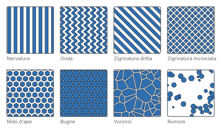
Applica texture imprime un motivo su una faccia, in rilievo o in incavo. Due numeri decidono se è stampabile: il passo deve essere più largo di due cordoni dell'ugello, la profondità più alta di uno strato. Solidon verifica entrambi prima di calcolare — un'impressione più fine della stampante sparisce, e altrimenti te ne accorgi solo sul pezzo finito.
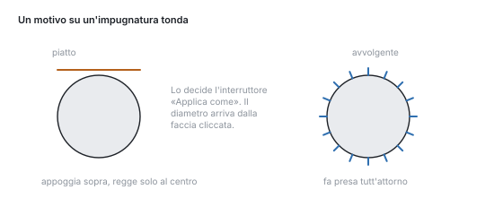
Su un pezzo tondo il motivo viene applicato avvolgendolo. Appoggiato piatto, il campo incontrerebbe il cilindro solo al centro e resterebbe in aria ai bordi.
Riempi con un reticolo sostituisce l'interno di un corpo con una struttura — gyroid, nido d'ape o reticolo cubico. Non è la stessa cosa del riempimento dello slicer: questa appartiene al modello, viaggia con il file e si può misurare. Lo spessore di parete della struttura viene verificato contro l'ugello, come per la texture.
Controllo remoto
Un altro programma comanda questa installazione — in locale, disattivabile, ritirabile.
Un altro programma sullo stesso computer può comandare Solidon — tramite MCP, la stessa interfaccia con cui lavorano Claude Code e strumenti simili. Chiama esattamente le operazioni che stanno anche nei menu.
È spenta finché non la accendi. L'interruttore sta nelle impostazioni, insieme alla porta. Dopodiché Solidon ascolta su 127.0.0.1 e solo lì: da un altro computer l'interfaccia non è raggiungibile, nemmeno dalla propria rete.
Ciò che arriva è una transazione come ogni altra. Un Ctrl+Z nella finestra la ritira, la cronologia la mostra, e nella voce sta scritto che è venuta da fuori.
Una cosa non passa per il filo, ed è voluto: tutto ciò che sembra un percorso di file. Ciò significherebbe che un programma estraneo decide che cosa viene letto su questo computer.
Nella controparte si inserisce come server con l'indirizzo http://127.0.0.1:8787/mcp.
Quali strumenti esistano sta in questo manuale. Ogni operazione dei capitoli seguenti ne è uno — con gli stessi parametri, gli stessi limiti e gli stessi valori predefiniti che mostra anche la finestra. Per questo non c'è un elenco a sé dell'interfaccia: sarebbe una seconda versione della stessa informazione, e dopo il secondo mese direbbe qualcos'altro.
Attivazione
Periodo di prova, chiave di licenza, e che cosa funziona ancora dopo la scadenza.
Senza chiave, Solidon funziona quattordici giorni come prova. Dopodiché resta aperto tutto ciò che si limita a leggere — aprire modelli, guardarli, misurarli —, solo le quattro azioni che scrivono richiedono una chiave: una modifica al modello, un'esportazione, la consegna allo slicer e la chat. I progetti restano dove sono, anche senza chiave.
Una demo a tempo limitato è un caso diverso. Finisce in un giorno fisso e dopo non riparte più — la barra di stato indica i giorni restanti fin dall'inizio e non solo poco prima della fine, così che nessuno resti sorpreso se ha cominciato tardi.
Si inserisce una chiave, non si crea un account. La strada è Aiuto → Sblocca Solidon …; la chiave finisce nel portachiavi di sistema, mai in un file di progetto. Meno di tre giorni prima della scadenza della prova, una riga nella barra di stato lo dice.
Quando qualcosa non va
I casi più frequenti all'inizio, con ciò che ci sta dietro.
I casi più frequenti all'inizio — che cosa c'è dietro e che cosa aiuta.
«Il modello non è chiuso.» Nel file mancano facce, oppure ci sono triangoli girati al contrario. Nei modelli scaricati è normale. Ripara nel rapporto di verifica chiude i fori piccoli e rigira le facce. Se manca un'intera parete, nessuna riparazione può indovinarla — allora il file è rotto e un'altra fonte è la strada più breve.
Un collegamento fallisce oppure mangia troppo. Le operazioni booleane hanno bisogno di corpi in ingresso puliti. Solidon prova nell'ordine più procedimenti e dice poi quale ha retto. Se lì c'è scritto voxel, il calcolo è stato grossolano e si è persa precisione — allora prima ripara, poi collega di nuovo.
Due facce sono esattamente una sull'altra. Il caso classico in cui una differenza non toglie nulla oppure compare uno sfarfallio. Rimedio: lascia sporgere di un centesimo di millimetro il corpo da sottrarre. I blocchi lo fanno da sé.
Il pezzo non entra sul piano. Dividi automaticamente lo taglia finché ogni parte entra e mette spine nelle facce di taglio. Se nel profilo della stampante c'è un volume di stampa sbagliato, è quella la vera causa — vale la pena controllare.
L'accoppiamento è troppo stretto o troppo lento. Non cambiare il modello, misura: stampa il corpo di prova delle tolleranze, provalo e inserisci il valore in Calibra materiale. Da lì in poi vale per ogni accoppiamento, anche per quelli nei progetti già costruiti.
Un passo non si lascia più modificare. Se una modifica cambiasse il numero degli oggetti mentre passi successivi lavorano con quegli oggetti, la valutazione si arresta. È voluto: i corpi nuovi non sono quelli vecchi, e un passo finito tacitamente altrove sarebbe peggio di un messaggio. Annulla i passi successivi, modifica, ricostruiscili.
Raccordo, smusso o STEP sono in grigio. Queste operazioni hanno bisogno di spigoli veri del secondo kernel di costruzione, che viaggia con l'installazione — qui si tratta del tipo di corpo, non di un programma mancante. O il corpo non è mai stato esatto: allora aiuta la casella Esatto (B-Rep) nella finestra di creazione, e in seguito anche nella finestra del passo. Oppure un'operazione mesh nel mezzo ha trasformato un corpo esatto in una mesh — allora non aiuta nessuna casella, solo l'ordine: annullare i passi da lì in poi, applicare l'operazione desiderata e ricostruire il resto. Solidon indica in entrambi i casi quale dei due vale.
La chat non risponde. Le serve un modello linguistico — una chiave propria oppure un Ollama locale. I modelli piccoli, sotto i sette miliardi di parametri circa, falliscono le chiamate agli strumenti, e lo fanno in modo affidabile. Tutto tranne la chat funziona anche senza.
È tutto lento. Mentre lavori gira la qualità di bozza; il calcolo fine arriva solo all'esportazione. Con mesh molto grandi conviene semplificare presto — il numero dei triangoli sta nell'albero degli oggetti. All'apertura di un progetto, un indicatore di caricamento si posa sulla vista, così che la scena vuota non sembri un progetto vuoto.
In generale vale questo: nessun errore in Solidon si ferma alla constatazione. Se accanto non c'è un'azione con cui proseguire, è un errore di Solidon e merita una segnalazione. La strada è Aiuto → Invia un riscontro: la schermata, il registro e, se vuoi, la sessione in corso partono insieme, l'anteprima mostra prima tutto quanto e un pulsante lo manda al supporto. Chi non vuole dare via nulla, dallo stesso dialogo deposita invece una cartella sul proprio computer.
Durante la demo Solidon chiede da sé. Dopo mezz'ora di lavoro — contano solo i minuti in cui ha fatto qualcosa — una scheda si posa sulla vista e chiede come sta andando. Non ferma nulla e aspetta che lei guardi. Dai un riscontro apre lo stesso dialogo di Aiuto → Invia un riscontro, con tre campi: come se la cava, che cosa ha funzionato bene, che cosa è mancato. Nessun campo è obbligatorio, l'anteprima mostra tutto prima, e senza il suo clic non esce nulla. No, grazie vale per sempre; chi lascia semplicemente la scheda lì, la vede al massimo tre volte.
Glossario
I termini che compaiono nei menu e nei messaggi, spiegati in breve.
Le parole che compaiono in Solidon, negli slicer e nei forum di stampa — spiegate in breve.
Mesh — un corpo come guscio di triangoli. STL e OBJ non contengono altro: niente cerchi, niente quote, solo triangoli.
Chiuso (a tenuta stagna) — il guscio non ha fori, dentro e fuori sono univoci. Solo un corpo chiuso si lascia collegare e stampare in modo affidabile.
Operazione — un passo di lavoro: forare, raccordare, dividere, mettere un blocco. In Solidon la geometria nasce solo così.
Transazione — tutto ciò che un annulla ritira in una volta sola. Una proposta della chat è esattamente una, anche quando è fatta di cinque operazioni.
Parametro — una quota del progetto con un nome, per esempio larghezza. Le operazioni possono farci i conti; se il valore cambia, cambia tutto ciò che vi è appeso.
Blocco — un elemento costruttivo già pronto della libreria, con quote prese da una tabella invece che dalla memoria.
Accoppiamento — quanto stretti stanno due pezzi uno dentro l'altro. Il gioco necessario viene dal profilo del materiale.
Gioco — la distanza tra perno e foro, perché i due si possano unire. Troppo poco blocca, troppo balla.
Accoppiamento forzato — interferenza invece di gioco: il pezzo viene pressato dentro e tiene da sé.
Tolleranza — la quantità di cui una quota si scosta di proposito dalla misura nominale, perché il risultato stampato sia giusto.
Ritiro — la plastica si contrae raffreddandosi. Per questo un pezzo stampato è un po' più piccolo di quanto disegnato.
Piede d'elefante — lo strato più basso viene premuto contro il piano e si allarga verso l'esterno. In basso il pezzo è più largo del previsto.
Sbalzo — una faccia che cresce obliqua verso l'esterno. Oltre un certo angolo lo strato sottostante non ha più nulla su cui posarsi.
Supporti — materiale stampato insieme al pezzo sotto uno sbalzo, che poi viene spezzato via.
Isola — una zona di uno strato sotto la quale non c'è nulla. Senza supporto la stampante lì stampa nel vuoto.
Ponte (campata) — un tratto orizzontale tra due punti d'appoggio. I ponti corti riescono senza supporto, quelli lunghi si abbassano.
Ugello — l'apertura da cui esce la plastica, di solito 0,4 mm. Limita quanto fine può essere un dettaglio.
Larghezza di estrusione — quanto larga viene una passata posata. Due passate affiancate sono la parete più sottile che abbia senso.
Altezza dello strato — quanto è spesso uno strato, di solito 0,2 mm. Più piccolo significa più fine e più lento.
Slicer — il programma che dal modello fa il file di stampa. Solidon non lo è e non ne sostituisce nessuno.
G-code — l'elenco di istruzioni pronto per la stampante. Esce dallo slicer.
STL — il formato più diffuso: solo triangoli, nessuna unità, nessun colore.
3MF — il successore moderno: con unità, colori e più oggetti in un solo file. Dove lo slicer lo sa leggere, è la scelta migliore.
STEP — un formato con facce e spigoli veri invece di triangoli. Quello che si scambiano i programmi CAD classici.
GLB — il formato dei visualizzatori: triangoli con colori, in un unico file che ogni browser apre. Pensato per mostrare, non per stampare.
Rapporto di verifica — l'elenco di ciò che salta all'occhio nella scena, ogni voce con un'azione che lo risolve.
Slot di materiale — l'assegnazione di una faccia a un materiale o a un colore nella stampa multicolore.
In base a cosa giudica Solidon
Queste regole stanno davanti all'agente a ogni richiesta. Sono il motivo per cui prende un foro per vite dalla tabella invece di stimarlo — e per cui chiede invece di indovinare.
Versione: 3
Spessore di parete minimo
Nessuna parete più sottile di due larghezze di estrusione. Il valore sta nel profilo della stampante e non si scrive mai come numero nell'operazione.
Smussi invece di sbalzi
Oltre i 45 gradi di sbalzo, applicare uno smusso invece di accettare i supporti. L'analisi degli strati dice dove sta lo sbalzo.
Tolleranze dal profilo del materiale
Creare gli accoppiamenti come coppia e indicare la tolleranza come auto:<material>. Un numero fisso non sopravvive a nessuna calibrazione.
Le misure principali come parametri
Ogni dimensione che l'utente potrebbe cambiare in seguito diventa un parametro di progetto con un nome parlante. I numeri sparsi nelle operazioni sono un vicolo cieco.
Sovrapposizione nelle operazioni booleane
Per unioni e differenze prevedere sempre 0,01 mm di sovrapposizione. Le facce coincidenti sono la causa più frequente di risultati rotti.
Fori più grandi della misura nominale
L'FDM stampa i fori più stretti del previsto. Allargare il foro del valore di compensazione dal profilo del materiale, non di un numero indovinato.
Il primo strato
Mettere in conto il piede d'elefante dal profilo del materiale quando il primo strato deve tenere la misura.
I blocchi prima delle primitive
Cercare prima nella libreria dei blocchi, poi costruire da sé. Un blocco porta con sé le sue caratteristiche, i suoi limiti e i suoi test.
Chiedere prima di indovinare
Con richieste ambigue usare ask_user. Una domanda costa un clic, un'ipotesi sbagliata costa una stampa.
Materiali, stampanti, pezzi normalizzati
Materiali
Tutte le quote in millimetri. Il «gioco» è la distanza che riceve un accoppiamento mobile, l'«accoppiamento forzato» l'interferenza di uno fisso. Un profilo calibrato porta valori misurati al posto dei valori predefiniti.
| Materiale | Gioco | Accoppiamento forzato | Maggiorazione del foro | Piede d'elefante | Ritiro | calibrato |
|---|---|---|---|---|---|---|
| ABS | 0,25 | -0,06 | 0,20 | 0,15 | 0,7 % | no |
| ASA | 0,25 | -0,06 | 0,20 | 0,15 | 0,6 % | no |
| PETG | 0,25 | -0,05 | 0,20 | 0,20 | 0,4 % | no |
| PETG-CF | 0,25 | -0,05 | 0,20 | 0,15 | 0,3 % | no |
| PLA | 0,20 | -0,05 | 0,15 | 0,15 | 0,2 % | no |
| TPU 95A | 0,35 | -0,10 | 0,30 | 0,25 | 0,2 % | no |
Stampante
La stampante impostata decide che cosa entra sul piano e da quando una parete è troppo sottile — due cordoni di estrusione sono il limite.
| Stampante | Volume di stampa | ugello | Altezza dello strato | Larghezza di estrusione | chiuso |
|---|---|---|---|---|---|
| Allgemeiner FDM-Drucker 220 mm | 220 × 220 × 250 | 0,40 | 0,20 | 0,42 | no |
| Anycubic Kobra 2 | 220 × 220 × 250 | 0,40 | 0,20 | 0,42 | no |
| Bambu Lab A1 | 256 × 256 × 256 | 0,40 | 0,20 | 0,42 | no |
| Bambu Lab A1 mini | 180 × 180 × 180 | 0,40 | 0,20 | 0,42 | no |
| Bambu Lab P1S | 256 × 256 × 256 | 0,40 | 0,20 | 0,42 | sì |
| Bambu Lab X1 Carbon | 256 × 256 × 256 | 0,40 | 0,20 | 0,42 | sì |
| Creality Ender-3 V3 | 220 × 220 × 250 | 0,40 | 0,20 | 0,42 | no |
| Creality K1 | 220 × 220 × 250 | 0,40 | 0,20 | 0,42 | sì |
| Creality K1 Max | 300 × 300 × 300 | 0,40 | 0,20 | 0,42 | sì |
| Elegoo Centauri Carbon 2 | 256 × 256 × 256 | 0,40 | 0,20 | 0,42 | sì |
| Elegoo Neptune 4 | 225 × 225 × 265 | 0,40 | 0,20 | 0,42 | no |
| Elegoo Neptune 4 Plus | 320 × 320 × 385 | 0,40 | 0,20 | 0,42 | no |
| Prusa MINI+ | 180 × 180 × 180 | 0,40 | 0,20 | 0,45 | no |
| Prusa MK4S | 250 × 210 × 220 | 0,40 | 0,20 | 0,45 | no |
| Prusa XL | 360 × 360 × 360 | 0,40 | 0,20 | 0,45 | no |
| Sovol SV06 | 220 × 220 × 250 | 0,40 | 0,20 | 0,42 | no |
Pezzi normalizzati
Da dove vengono le quote quando un blocco mette un foro per vite o una sede per dado. Niente di tutto ciò viene stimato.
| Dimensione | Quota nominale | Foro passante | Foro di preforatura | Testa | Passo |
|---|---|---|---|---|---|
| M2 | 2,0 | 2,4 | 1,60 | 3,8 | 0,40 |
| M2.5 | 2,5 | 2,9 | 2,05 | 4,5 | 0,45 |
| M3 | 3,0 | 3,4 | 2,50 | 5,5 | 0,50 |
| M4 | 4,0 | 4,5 | 3,30 | 7,0 | 0,70 |
| M5 | 5,0 | 5,5 | 4,20 | 8,5 | 0,80 |
| M6 | 6,0 | 6,6 | 5,00 | 10,0 | 1,00 |
| M8 | 8,0 | 9,0 | 6,80 | 13,0 | 1,25 |
Dadi, rondelle, inserti a caldo, magneti, cuscinetti, profilati e tubi stanno nella stessa tabella; i blocchi vanno a consultarla lì.
Gli strumenti del comando a distanza
Ogni voce qui è la stessa operazione che sta anche nel menu, con gli stessi parametri. Ciò che arriva diventa una transazione come tutte le altre: la cronologia la mostra, un Ctrl+Z la ritira.
Scena
- Disponi sul piano (
arrange_bed) — Dispone tutti gli oggetti uno accanto all'altro sul piatto di stampa. - Duplica oggetto (
duplicate_object) — Crea altri esemplari dell'oggetto. Restano tutti separati, e la quantità sta nella pila come numero. - Rimuovi oggetto (
delete_object) — Toglie un oggetto dalla scena. Il passo sta nella cronologia, quindi un annulla lo riporta indietro. - Rinomina oggetto (
rename_object) — Dà a un oggetto un altro nome. La geometria resta intatta. - Verifica le collisioni (
check_collisions) — Segnala le sovrapposizioni e ciò che sporge dal volume di stampa.
Riparazione
- Ripara (
repair) — Chiude i fori, rimuove i triangoli degeneri e orienta le facce.
Trasformazione
- Allinea alla caratteristica (
align_to_feature) — Fa coincidere un asse di foro o una faccia con un secondo. - Appoggia sul piano (
place_on_bed) — Posa l'oggetto con il suo lato inferiore su Z = 0. - Copie in fila o in cerchio (
pattern) — Dispone copie in fila o su un cerchio — uno schema di fori, una corona di torrette per viti, una fila di clip. Un passo con dentro un numero invece di nove passi identici nella pila. - Orienta per la stampa (
orient_for_print) — Cerca la giacitura con il minor fabbisogno di supporti. - Porta a misura (
fit_to_size) — Scala un oggetto in modo che il suo spigolo più lungo abbia la quota indicata. Per tutto ciò di cui si conosce la dimensione ma il cui fattore andrebbe prima calcolato. - Ruota (
rotate_object) — Ruota un oggetto attorno a un asse. Il punto di rotazione decide attorno a cosa: il proprio centro, l'origine del progetto o il centro del piano. - Scala (
scale_object) — Scala un oggetto in modo uniforme o per asse. - Specchia (
mirror_object) — Specchia un oggetto rispetto a un asse. Per il pezzo simmetrico — supporto sinistro e destro dalla stessa costruzione. - Sposta (
translate_object) — Sposta un oggetto dei millimetri indicati.
Forme di base
- Crea un cilindro (
create_cylinder) — Crea un cilindro in piedi su Z = 0. - Crea un cilindro esatto (
create_brep_cylinder) — Crea un cilindro con spigoli veri, appoggiato su Z = 0: in seguito vi si possono applicare smussi e raccordi. - Crea un parallelepipedo (
create_box) — Crea un parallelepipedo, centrato su Z = 0 o appoggiato su un angolo. - Crea un parallelepipedo esatto (
create_brep_box) — Crea un parallelepipedo con spigoli veri: in seguito vi si possono applicare smussi e raccordi. - Crea una sfera (
create_sphere) — Crea una sfera appoggiata su Z = 0. - Perno filettato come nuovo oggetto (
thread_exact) — Un bullone con vera filettatura esterna elicoidale — come corpo esatto, che l'esportazione STEP porta con sé. Ingrandito del gioco e sottratto da un corpo diventa la filettatura interna.
Unire e sottrarre
- Fondi dolcemente (
blend_union) — Unisce due corpi con un passaggio morbido invece di una gola viva. Per manici, puntoni e tutto ciò che, stampato, non deve rompersi nello spigolo interno. - Intersezione (
intersect_objects) — Mantiene solo ciò che i due oggetti hanno in comune. Quello cliccato per primo mantiene nome e materiale. - Sottrai (
subtract_objects) — Sottrae il secondo oggetto dal primo. Fai clic prima sul pezzo che deve restare, poi su quello da togliere. - Unisci (
union_objects) — Fonde due oggetti in uno. Quello cliccato per primo mantiene nome e materiale: il secondo vi confluisce.
Schizzo
- Estrudi forma di base (
sketch_extrude) — Tira su una forma di base perpendicolarmente fino a un corpo. Il contorno viene da uno schizzo risolto ed entra nel kernel come curva esatta — un cerchio è davvero rotondo. - Estrudi lungo un arco (
sketch_sweep) — Fa scorrere una sezione lungo un arco: parte in verticale, inclinandosi di lato con il raggio dell'arco — un gomito di tubo in un passo. - Ritaglia tasca (
sketch_pocket) — Taglia una forma di base come tasca in un corpo esatto: dallo spigolo superiore verticalmente verso il basso, passante a richiesta. Un clic su una faccia inserisce il punto in anticipo. - Rivoluziona una sezione (
sketch_revolve) — Fa ruotare una sezione attorno all'asse verticale: un rettangolo diventa una boccola, un cerchio un anello. Il corpo poggia su Z = 0. - Tendi tra due contorni (
sketch_loft) — Tende un corpo tra la forma di base e la sua copia rimpicciolita in altezza — tronco di piramide, tronco di cono, imbuto.
Modellazione
- Applica l'angolo di sformo (
draft_faces) — Inclina tutte le facce verticali di un corpo esatto di un angolo: per lo sformo, o perché un contenitore impilabile si impili davvero. - Applica uno smusso (
chamfer_edges) — Smussa gli spigoli di un corpo esatto a 45 gradi. - Raccorda (
fillet_edges) — Raccorda gli spigoli di un corpo esatto: geometricamente preciso, perché lo spigolo è una curva e non una successione di segmenti. - Scosta la faccia (
push_face) — Afferra una faccia e la sposta lungo la sua normale; le pareti vicine crescono insieme. La strada per cambiare una parete senza cercare l'operazione che l'ha creata — in uno STEP importato non ce n'è nessuna. - Svuota esatto (
shell_exact) — Svuota un corpo esatto a uno spessore di parete preciso e lascia aperta la parte superiore: una scatola da un parallelepipedo, in un passo. Per lo svuotamento chiuso con sfiato c'è l'operazione su mesh.
Fori
- Chiudi un foro (
plug_hole) — Riempie di nuovo un foro — per esempio quando un pezzo estraneo ne ha uno di troppo. - Eseguire un foro esatto (
drill_brep_hole) — Fora un foro rotondo in un corpo esatto: resta esatto, e smusso, raccordo ed esportazione STEP restano disponibili. - Pratica un foro (
drill_hole) — Pratica un foro rotondo — su richiesta allargato della tolleranza del materiale. - Svasa (
countersink_hole) — Svasa l'imboccatura di un foro perché la testa della vite sieda a filo.
Blocchi
- Aggancio a scatto (
insert_snap_fit) — Braccio elastico con gancio, per far scattare insieme due pezzi. Il braccio è lungo almeno dieci volte il suo spessore, altrimenti si rompe invece di flettere. - Attacco a buco di serratura (
insert_keyhole) — Incavo a forma di buco di serratura: la testa passa dall'estremità tonda, il gambo tiene nella fessura. - Cerniera a film (
insert_living_hinge) — Due ali collegate da un punto sottile. Gli strati corrono di traverso alla piega, altrimenti la cerniera si rompe alla prima apertura. - Clip per cavo (
insert_cable_clip) — Una staffa che si posa su una faccia e trattiene un cavo. L'apertura è più stretta del cavo: lo si preme dentro e resta. - Connettore a scatto per una giunzione (
insert_snap_connector) — Braccio elastico e tasca come coppia: le metà scattano invece di essere incollate. Il braccio è spesso un decimo della lunghezza; sotto gli 8 mm non esiste, più corto il braccio sarebbe più sottile di quanto un ugello depositi con portata. - Corpo di prova per le tolleranze (
insert_fit_ladder) — Perni e fori con gioco scaglionato. Stampare una volta, provare, e il valore è deciso — dopo va nel profilo del materiale, non nel modello. - Crea coperchio (
create_lid) — Crea per un'apertura un coperchio adatto con collare. La cavità viene tagliata dal corpo, non rimisurata — il gioco viene dal profilo del materiale. - Crea coperchio a vite (
screw_lid) — Mette un collo filettato sull'apertura e crea il tappo a vite corrispondente. Entrambe le filettature vengono dallo stesso passo, il gioco dal profilo del materiale. - Dente di scatto (
insert_latch) — Dente per lo scatto, con rampa d'invito verso l'alto e faccia di ritegno dritta verso il basso — stampa senza supporto e tiene a trazione. - Fazzoletto d'angolo (
insert_gusset) — Un triangolo in uno spigolo interno: tiene due pareti ad angolo retto dove altrimenti si aprirebbero. La risposta classica a uno spigolo che cede quando lo si afferra. - Filettare il foro (
insert_printed_thread) — Filettatura stampabile come elica con cresta appiattita — non un profilo ISO, perché una stampante comunque non lo risolve. - Foro per vite con svasatura (
insert_screw_hole) — Foro passante per avvitare con una vite metrica, a richiesta con svasatura a 90 gradi e spazio per la testa. Quote dalla tabella dei componenti normalizzati. - Gancio per pannello forato (
insert_pegboard_hook) — Ganci per un pannello forato, direttamente sul pezzo. Infilati dall'alto nelle fessure e tirati verso il basso — il naso fa presa dietro il pannello e la linguetta elastica scatta. Il pezzo si stampa sdraiato: la linguetta nel piano di stampa, così flette lungo i suoi strati invece di strapparsi tra di essi. - Inserto a caldo (
insert_heatset_m4) — Foro per un inserto a caldo con smusso di invito. Il diametro è volutamente stretto: il materiale deve essere spinto via durante l'inserimento. - Linguetta per profilato di alluminio (
insert_profile_tongue) — Un piede a T che si infila dalla testata nella cava di un profilato di alluminio e lì tiene. Collo e testa vengono dalla tabella dei componenti normalizzati. Per la stampa conviene coricare la linguetta nel senso della cava — in piedi, la spalla sotto la testa è uno sbalzo. - Nervatura di irrigidimento (
insert_rib) — Nervatura con raccordo di uscita obliquo: irrigidisce una parete senza ispessirla. Resta più sottile della parete su cui siede — altrimenti si vede dall'altro lato. - Occhio di cerniera (
insert_hinge_eye) — Una linguetta forata che ruota su un perno. Due su due pezzi, con una spina in mezzo, formano una cerniera che dura — a differenza della cerniera a film, che si limita a piegarsi. - Passacavo con scarico di trazione (
insert_cable_gland) — Passacavo per un cavo tondo, con un punto di serraggio dietro. Senza quello ogni strattone al cavo tira direttamente sul punto di saldatura. - Piedino (
insert_foot) — Un piedino sotto una custodia: stampato, oppure come sede per uno di gomma acquistato. Quattro tengono fermo un apparecchio e ne staccano il fondo dal tavolo. - Scala degli spessori di parete (
insert_wall_ladder) — Pareti da una a più larghezze di estrusione. Mostra da quando la stampante depone davvero ancora materiale — la base per lo spessore minimo di parete. - Sede per dado (
insert_nut_trap) — Tasca per un dado esagonale, infilato di lato o inserito da sotto, a richiesta con foro passante per la vite. - Spina e foro di accoppiamento (
insert_dowel) — Spina o foro come coppia, per innestare due pezzi. Il gioco viene dal profilo del materiale, così una calibrazione successiva raggiunge anche i progetti vecchi. - Supporto a parete (
insert_wall_mount) — Piastra posteriore con fori per viti e mensola sporgente in avanti. I fori sono fori passanti dalla tabella dei pezzi normalizzati. - Tasca per magnete (
insert_magnet_pocket) — Tasca per un magnete tondo, a richiesta con strato di copertura da sovrastampare e un labbro di ritegno sul bordo. - Ventaglio degli sbalzi (
insert_overhang_fan) — Superfici da ripide a piatte. Mostra da quale angolo questa stampante con questo materiale ha davvero bisogno di supporti — invece della regola empirica dei 45 gradi.
Dividere e adattare
- Compensa il piede d'elefante (
compensate_first_layer) — Ritira i primi strati della misura di cui si allargano in stampa. Il valore viene dal profilo del materiale. - Crea pezzo di prova (
test_piece) — Ritaglia un cubo attorno a un punto, per stamparlo e provarlo — due minuti invece di due ore. - Dividere (
split_pinned) — Divide un oggetto su un piano, con spine nella faccia di taglio se desiderato. Il gioco viene dal profilo del materiale; zero spine significa: solo tagliare. - Dividere lungo una linea tracciata (
split_line) — Divide un oggetto lungo una linea tracciata nella vista e, se desiderato, inserisce spine di centraggio nella faccia di taglio. - Imposta il materiale (
set_material) — Dà a questo corpo un materiale proprio. Tolleranze, ritiro e piede d'elefante vengono poi calcolati con esso e non con quello del progetto. - Svuota (
hollow_object) — Svuota un oggetto e vi mette gli sfiati. Risparmia materiale e tempo; lo spessore di parete è corretto nei limiti della griglia.
Importa
- Carica modello (
load) — Legge un file modello, lo converte in millimetri e lo ripulisce. Un assieme 3MF arriva come più oggetti, non come un blocco unico. - Carica STEP (
load_step) — Legge un file STEP come corpo esatto. STEP porta con sé la propria unità: la domanda sull'unità non si pone. - Estrudi un disegno (
load_outline) — Legge un disegno SVG o DXF e gli dà un'altezza. I contorni interni diventano fori.
Colore
- Colora l'intero pezzo (
assign_slot) — Mette l'intero oggetto in uno slot materiale. Un pezzo diventa multicolore unendo corpi con assegnazioni diverse. - Colora la faccia (
paint_slot) — Colora completamente una faccia riconosciuta in un filamento. Il confine della faccia viene dal riconoscimento — nessun pennello, nessun raggio. - Converti i colori in slot (
slots_from_texture) — Riduce la texture di un oggetto al numero di filamenti caricati e salva il risultato come slot materiale.
Scritta
- Applica testo (
label_text) — Applica un testo in rilievo o inciso su una faccia. Il carattere viene elaborato come contorno, non come immagine — gli spigoli restano puliti a ogni dimensione. - Scritta come corpo (
create_label) — Crea una scritta come oggetto a sé — per la stampa bicolore con due file e per lettere da incollare.
Superficie superiore
- Applica texture (
apply_texture) — Imprime un motivo come geometria vera su una faccia — zigrinatura per la presa, nido d'ape o nervatura per l'aspetto. Ciò che riceve lo slicer è ciò che si vede. - Applica un rilievo (
displace_image) — Trasforma la luminosità di un’immagine in altezza sulla superficie. Per venature, goffrature e stemmi: tutto ciò per cui uno schizzo non va bene. - Riempi con un reticolo (
lattice_fill) — Riempie la cavità di un corpo svuotato con una struttura reticolare come geometria reale. Viaggia dentro il 3MF ed è sempre la stessa, chiunque faccia lo slicing del pezzo.
Mesh
- Affina gli spigoli (
remesh_mesh) — Divide gli spigoli lunghi finché la mesh non è uniforme. La forma resta esatta. - Chiudi la superficie aperta (
thicken) — Dà a una superficie aperta una parete e la trasforma così in un corpo. La strada per una mesh che arriva come superficie invece che come volume. - Converti in una mesh (
brep_to_mesh) — Converte un corpo esatto in una mesh di triangoli. Non c'è ritorno: gli spigoli spariscono. - Dai una posa (
pose_armature) — Piega un corpo attorno a uno scheletro. Una posa, non un movimento: ciò che si stampa è uno stato. - Leviga (
smooth_mesh) — Toglie la ruvidità da una superficie senza restringere il corpo. Per mesh generate con gradini a scala. - Modella (
sculpt_strokes) — Aggiunge e toglie materiale col pennello. L’intera sessione è un passo della cronologia e resta modificabile, per quanti tratti contenga. - Ridurre i triangoli (
decimate_mesh) — Riduce il numero di triangoli. La deviazione massima dalla superficie di partenza viene misurata e riportata. - Suddividi la superficie (
subdivide_surface) — Trasforma una superficie sfaccettata in una curva: i nuovi punti non vengono messi nella faccetta, ma sulla curvatura che essa rappresenta. Gli spigoli vivi restano vivi. - Uniformare i triangoli (
remesh_uniform) — Porta tutti i triangoli più o meno alla stessa dimensione — quelli grossolani vengono divisi, quelli inutilmente fini raggruppati. Il passo che precede la modellazione a mano.
Lettura, parametri, annullamento
Questi strumenti non stanno in nessun menu — sono l'informazione che serve a una controparte prima che cambi qualcosa.
- Annulla una transazione (
undo_transaction) — Ritira una transazione dalla cronologia. - Crea parametro (
add_parameter) — Crea una quota principale come parametro di progetto invece di impostarla come numero. - Cambia un parametro (
set_parameter) — Cambia il valore di un parametro di progetto esistente. - Crea un accoppiamento (
add_fit) — Crea una coppia di accoppiamento. La tolleranza viene dal profilo del materiale. - Leggi il rapporto di verifica (
read_report) — Leggi il rapporto di verifica, a scelta solo da una gravità in su. - Cerca un blocco (
find_part) — Cerca un blocco adatto prima di assemblare geometria da te. - Leggi la scheda (
read_digest) — Rileggi la scheda della scena — con le caratteristiche e gli ID che i tuoi passi precedenti hanno creato. - Consulta le misure normalizzate (
read_standard) — Consulta le quote dei pezzi normalizzati: foro di preforatura, foro passante, apertura di chiave e altro — invece di indovinarle. - Leggi un'analisi (
read_analysis) — Leggi un'analisi: stampabilità (sbalzo, isole, ponti), stima di tempo e materiale, consiglio sulle impostazioni o ricerca dell'orientamento. Solo in lettura, la provenienza viene dichiarata. - Cambia stampante e materiale (
set_print_target) — Cambia la stampante o il materiale del progetto. Le tolleranze sono riferimenti al profilo del materiale e si convertono di conseguenza.
Cosa non passa per il cavo
Due operazioni sono bloccate, ed entrambe per la stessa ragione: un programma estraneo non deve decidere cosa viene eseguito o letto su questa macchina.
- Domanda all'utente (
ask_user)
Inoltre viene rifiutato ogni argomento che assomiglia a un percorso di file. Entrambi restano utilizzabili nella finestra; chiuso è solo l'accesso dall'esterno.
Messaggi parola per parola
Cosa dice l'applicazione quando qualcosa non va — parola per parola, così si può cercare. Qui un errore non finisce mai con «non riuscito»: a ogni messaggio appartiene almeno una via per proseguire.
| Messaggio | Cosa aiuta |
|---|---|
| Due vincoli si contraddicono. | Correggi l'inserimento, Annulla |
| Il kernel B-Rep non è installato su questo computer. | Programmi aggiuntivi …, Annulla |
| Il modello linguistico ha impiegato troppo tempo. | Programmi aggiuntivi …, Prova di nuovo, Annulla |
| Il modello linguistico non ha risposto. | Programmi aggiuntivi …, Prova di nuovo, Annulla |
| Il modello è aperto in più punti. | Ripara e riprova, Mostra i punti, Annulla |
| Il periodo di prova è scaduto — per questo Solidon ha bisogno di una chiave di licenza. | Inserisci la chiave di licenza, Acquista Solidon, Annulla |
| L'immissione non era utilizzabile così com'era. | Correggi l'inserimento, Annulla |
| L'indicazione non è univoca. | Seleziona, Annulla |
| L'installazione di Solidon è danneggiata. | Apri la pagina dei download, Crea una segnalazione di errore, Annulla |
| L'oggetto non entra nel volume di stampa. | Dividi il modello, Riduci al volume di stampa, Scegli un altro profilo di stampante, Annulla |
| L'operazione booleana è fallita a ogni livello. | Ripara e riprova, Forza lo stadio voxel, Mostra i punti, Annulla |
| La generazione della mesh non ha fornito alcun modello. | Annulla |
| La geometria non ha consentito l'operazione. | Ripara e riprova, Mostra i punti, Annulla |
| La risposta del modello linguistico non si è potuta leggere. | Programmi aggiuntivi …, Prova di nuovo, Annulla |
| Nel programma si è verificato un errore imprevisto. | Crea una segnalazione di errore, Mostra dettagli, Annulla |
| Non è stato possibile determinare l'unità del file. | Correggi l'inserimento, Annulla |
| Non è stato possibile inviare il riscontro. | Invia di nuovo, Archivia il rapporto, Invialo tu per e-mail, Annulla |
| Non è stato possibile scrivere il file. | Prova di nuovo, Scegli un'altra posizione, Correggi l'inserimento, Annulla |
| Per una mappa di analisi questo modello è troppo grande. | Ridurre i triangoli., Annulla |
| Questa chiave di licenza non è utilizzabile. | Correggi l'inserimento, Acquista Solidon |
| Questa operazione lavora solo su un corpo esatto. | Annulla |
| Un programma esterno non ha risposto. | Programmi aggiuntivi …, Prova di nuovo, Annulla |
| Un valore sta fuori dall'intervallo consentito. | Correggi l'inserimento, Annulla |
La riga sotto, nella finestra, dice il motivo proprio per questo caso — quale parete è troppo sottile, quale valore è fuori intervallo, quale file si intendeva.
Scena
Disponi sul piano (arrange_bed)
Dispone tutti gli oggetti uno accanto all'altro sul piatto di stampa.
Oggetti: 0 → -1 · reversibile · deterministico · Scorciatoia Ctrl+Shift+O
| Parametri | Unità | Valore predefinito | Intervallo | Significato |
|---|---|---|---|---|
Distanza spacing | mm | 5 | 0 … 100 | Aria tra i pezzi. Abbastanza perché un piede d'elefante non saldi due pezzi lungo il bordo. |
Piatti di stampa plates | 1 | 1 … 12 | Ciò che non entra su un piatto passa al successivo. | |
Separa per filamento by_material | spento | Mette i pezzi di filamenti diversi su piatti diversi. Due filamenti su un piatto costano un cambio con spurgo per ogni strato condiviso. |
Duplica oggetto (duplicate_object)
Crea altri esemplari dell'oggetto. Restano tutti separati, e la quantità sta nella pila come numero.
Oggetti: 1 → -1 · reversibile · deterministico · Scorciatoia Ctrl+D
| Parametri | Valore predefinito | Intervallo | Significato |
|---|---|---|---|
Numero count | 2 | 1 … 100 | Quanti esemplari ci sono dopo. Due è una copia — la quantità sta così nella pila e non nel nome del file. |
Nome della copia name | Vuoto: il nome viene derivato dall'originale. |
Rimuovi oggetto (delete_object)
Toglie un oggetto dalla scena. Il passo sta nella cronologia, quindi un annulla lo riporta indietro.
Oggetti: 1 → 0 · reversibile · deterministico · Scorciatoia Del
Rinomina oggetto (rename_object)
Dà a un oggetto un altro nome. La geometria resta intatta.
Oggetti: 1 → 1 · reversibile · deterministico · Scorciatoia F2
| Parametri | Valore predefinito | Significato |
|---|---|---|
Nome name | richiesto | Nuovo nome dell'oggetto. |
Verifica le collisioni (check_collisions)
Segnala le sovrapposizioni e ciò che sporge dal volume di stampa.
Oggetti: 0 → -1 · reversibile · deterministico
| Parametri | Unità | Valore predefinito | Intervallo | Significato |
|---|---|---|---|---|
Distanza minima clearance | mm | 0 | 0 … 50 | Da quando due pezzi contano come troppo vicini. Zero segnala solo le sovrapposizioni vere; un valore superiore segnala anche i punti stretti. |
Riparazione
Ripara (repair)
Chiude i fori, rimuove i triangoli degeneri e orienta le facce.
Oggetti: 1 → 1 · reversibile · deterministico · Scorciatoia Ctrl+Shift+R · Vale per: Spigolo aperto
| Parametri | Valore predefinito | Significato |
|---|---|---|
Chiudi i punti aperti fill_holes | acceso | Chiude i fori piccoli. Non può sostituire una parete mancante. |
Saldatura dei vertici weld | acceso | Unisce i punti che praticamente coincidono. Il motivo più frequente per cui una mesh sembra fatta di più parti. |
Rimuovi i triangoli degeneri degenerate | acceso | Triangoli senza area. Disturbano ogni calcolo successivo e non portano nulla. |
Unificazione delle normali normals | acceso | Stabilisce da che parte è l'esterno. Senza, le facce appaiono scure o spariscono. |
Elimina i frammenti minuscoli small_components | spento | Spento per impostazione predefinita: si elimina solo ciò che va eliminato espressamente. |
Risolvi le autointersezioni self_intersections | spento | Ricalcola le facce che si compenetrano a vicenda. Aiuta con le mesh generate e costa precisione — quindi spento finché non serve. |
Trasformazione
Allinea alla caratteristica (align_to_feature)
Fa coincidere un asse di foro o una faccia con un secondo.
Oggetti: 1 → 1 · reversibile · deterministico · Vale per: Foro, perno, Faccia
| Parametri | Valore predefinito | Significato |
|---|---|---|
Caratteristica feature | Foro o faccia sull'oggetto spostato. Un clic nella finestra lo inserisce. | |
Destinazione target | Caratteristica su cui allineare, scritta come obj_2:hole_1. | |
Al contrario flip | spento | Gira il risultato di 180 gradi, se si intendeva l'altro lato. |
Appoggia sul piano (place_on_bed)
Posa l'oggetto con il suo lato inferiore su Z = 0.
Oggetti: 1 → 1 · reversibile · deterministico · Scorciatoia Ctrl+Shift+B
Copie in fila o in cerchio (pattern)
Dispone copie in fila o su un cerchio — uno schema di fori, una corona di torrette per viti, una fila di clip. Un passo con dentro un numero invece di nove passi identici nella pila.
Oggetti: 1 → -1 · reversibile · deterministico
| Parametri | Unità | Valore predefinito | Intervallo | Significato |
|---|---|---|---|---|
Tipo kind | linear | linear, circular | Lineare allinea le copie lungo una direzione, circolare le dispone attorno a un asse. Un'operazione, due modalità — non due voci. | |
Numero count | 4 | 1 … 100 | Quanti esemplari ci sono dopo, originale compreso. Uno solo non è una serie. | |
Distanza spacing | mm | 20 | 0 … | Da centro a centro, nel tipo lineare. Nel circolare conta l'angolo. Vale quando Tipo = linear. |
Angolo angle | ° | 360 | -360 … 360 | Su quale arco vengono distribuite le copie. 360 gradi pieni chiudono la corona senza che due copie cadano una sull'altra. Vale quando Tipo = circular. |
Asse axis | z | x, y, z | Attorno a quale asse corre la corona. Passa per l'origine. Vale quando Tipo = circular. | |
Direzione X dx | 1 | Direzione della fila lineare. Senza direzione tutte le copie giacerebbero una sull'altra. Vale quando Tipo = linear. | ||
Direzione Y dy | 0 | Secondo asse della direzione — vedi Direzione X. Vale quando Tipo = linear. | ||
Direzione Z dz | 0 | Terzo asse della direzione — vedi Direzione X. Vale quando Tipo = linear. |
Orienta per la stampa (orient_for_print)
Cerca la giacitura con il minor fabbisogno di supporti.
Oggetti: 1 → 1 · reversibile · con seme
| Parametri | Valore predefinito | Intervallo | Significato |
|---|---|---|---|
Cerca a fondo thorough | acceso | Fa passare centinaia di giaciture per l'analisi degli strati. Spento significa: euristica rapida sulle facce. | |
Candidati candidates | 200 | 8 … 2000 | Quante giaciture vengono calcolate. Di più trova miglioramenti più fini e dura proporzionalmente di più. Vale se Cerca a fondo è spuntato. |
Porta a misura (fit_to_size)
Scala un oggetto in modo che il suo spigolo più lungo abbia la quota indicata. Per tutto ciò di cui si conosce la dimensione ma il cui fattore andrebbe prima calcolato.
Oggetti: 1 → 1 · reversibile · deterministico
| Parametri | Unità | Valore predefinito | Intervallo | Significato |
|---|---|---|---|---|
Spigolo più lungo largest | mm | 100 | 0,1 … 1000 | Lo spigolo più lungo cresce fino a questa misura; gli altri seguono in proporzione. |
Riferimento about | centre | centre, origin, bed | Quale punto resta fermo durante la scalatura. |
Ruota (rotate_object)
Ruota un oggetto attorno a un asse. Il punto di rotazione decide attorno a cosa: il proprio centro, l'origine del progetto o il centro del piano.
Oggetti: 1 → 1 · reversibile · deterministico · Scorciatoia Ctrl+R
| Parametri | Unità | Valore predefinito | Intervallo | Significato |
|---|---|---|---|---|
Asse axis | z | x, y, z | Attorno a quale asse si ruota. Z gira sul piano, X e Y ribaltano. | |
Angolo angle | ° | 90 | -360 … 360 | Angolo di rotazione in senso antiorario, visto dalla punta dell'asse. |
Centro di rotazione about | centre | centre, origin, bed | Baricentro dell'oggetto, origine del mondo o superficie d'appoggio. |
Scala (scale_object)
Scala un oggetto in modo uniforme o per asse.
Oggetti: 1 → 1 · reversibile · deterministico
| Parametri | Valore predefinito | Intervallo | Significato |
|---|---|---|---|
Fattore factor | 1 | 0,001 … 1000 | Scalatura uniforme. I valori per singolo asse stanno sul retro. Se la quota di destinazione è nota, «Porta a misura» è la strada più breve. |
Fattore X fx | 0 | 0 … | Solo questo asse. Zero significa: vale il fattore uniforme qui sopra. |
Fattore Y fy | 0 | 0 … | Zero significa: vale il fattore uniforme qui sopra. |
Fattore Z fz | 0 | 0 … | Zero significa: vale il fattore uniforme qui sopra. Scalare per asse deforma i fori — diventano ovali. |
Punto di riferimento about | centre | centre, origin, bed | Il punto che resta fermo: baricentro, origine o superficie d'appoggio. |
Specchia (mirror_object)
Specchia un oggetto rispetto a un asse. Per il pezzo simmetrico — supporto sinistro e destro dalla stessa costruzione.
Oggetti: 1 → 1 · reversibile · deterministico · Scorciatoia Ctrl+M
| Parametri | Valore predefinito | Intervallo | Significato |
|---|---|---|---|
Asse axis | x | x, y, z | L'asse rispetto a cui si specchia — l'altra mano dello stesso pezzo. |
Punto di riferimento about | centre | centre, origin, bed | Dove giace il piano di specchiatura: baricentro, origine o superficie d'appoggio. |
Sposta (translate_object)
Sposta un oggetto dei millimetri indicati.
Oggetti: 1 → 1 · reversibile · deterministico · Scorciatoia Ctrl+T
| Parametri | Unità | Valore predefinito | Significato |
|---|---|---|---|
Spostamento X dx | mm | 0 | Di quanto si sposta, non verso dove. Positivo va a destra. |
Spostamento Y dy | mm | 0 | Positivo va all'indietro. |
Spostamento Z dz | mm | 0 | Positivo va verso l'alto. Per appoggiare c'è Posa sul piano. |
Forme di base
Crea un cilindro (create_cylinder)
Crea un cilindro in piedi su Z = 0.
Oggetti: 0 → 1 · reversibile · deterministico
| Parametri | Unità | Valore predefinito | Intervallo | Significato |
|---|---|---|---|---|
Diametro diameter | mm | 20 | 0,1 … 1000 | Diametro esterno. Il cilindro poggia su Z = 0. |
Altezza height | mm | 20 | 0,1 … 1000 | Altezza verso l'alto, a partire dalla superficie d'appoggio. |
Segmenti segments | 48 | 8 … 256 | Più segmenti significa più tondo e più lento. | |
Nome name | Come si chiama l'oggetto nell'albero. Vuoto significa: Solidon ne assegna uno. |
Crea un cilindro esatto (create_brep_cylinder)
Crea un cilindro con spigoli veri, appoggiato su Z = 0: in seguito vi si possono applicare smussi e raccordi.
Oggetti: 0 → 1 · reversibile · deterministico
| Parametri | Unità | Valore predefinito | Intervallo | Significato |
|---|---|---|---|---|
Diametro diameter | mm | 20 | 0,1 … 1000 | Diametro esterno. Come corpo esatto è davvero rotondo, non poligonale. |
Altezza height | mm | 20 | 0,1 … 1000 | Altezza verso l'alto, a partire dalla superficie d'appoggio. |
Nome name | Come si chiama l'oggetto nell'albero. Vuoto significa: Solidon ne assegna uno. |
Crea un parallelepipedo (create_box)
Crea un parallelepipedo, centrato su Z = 0 o appoggiato su un angolo.
Oggetti: 0 → 1 · reversibile · deterministico
| Parametri | Unità | Valore predefinito | Intervallo | Significato |
|---|---|---|---|---|
Larghezza width | mm | 40 | 0,1 … 1000 | Estensione in X. Può essere un'espressione, per esempio =@larghezza*2. |
Profondità depth | mm | 30 | 0,1 … 1000 | Estensione in Y. |
Altezza height | mm | 10 | 0,1 … 1000 | Estensione in Z, cioè verso l'alto. |
Punto di riferimento anchor | centre | centre, corner | Centrato sull'origine o con l'angolo sopra di essa. | |
Nome name | Come si chiama l'oggetto nell'albero. Vuoto significa: Solidon ne assegna uno. |
Crea un parallelepipedo esatto (create_brep_box)
Crea un parallelepipedo con spigoli veri: in seguito vi si possono applicare smussi e raccordi.
Oggetti: 0 → 1 · reversibile · deterministico
| Parametri | Unità | Valore predefinito | Intervallo | Significato |
|---|---|---|---|---|
Larghezza width | mm | 40 | 0,1 … 1000 | Estensione in X. |
Profondità depth | mm | 30 | 0,1 … 1000 | Estensione in Y. |
Altezza height | mm | 20 | 0,1 … 1000 | Estensione in Z, cioè verso l'alto. |
Nome name | Come si chiama l'oggetto nell'albero. Vuoto significa: Solidon ne assegna uno. |
Crea una sfera (create_sphere)
Crea una sfera appoggiata su Z = 0.
Oggetti: 0 → 1 · reversibile · deterministico
| Parametri | Unità | Valore predefinito | Intervallo | Significato |
|---|---|---|---|---|
Diametro diameter | mm | 20 | 0,1 … 1000 | Diametro esterno. La sfera appoggia su Z = 0. |
Segmenti segments | 32 | 8 … 128 | Più segmenti significa più tondo e più lento. | |
Nome name | Come si chiama l'oggetto nell'albero. Vuoto significa: Solidon ne assegna uno. |
Perno filettato come nuovo oggetto (thread_exact)
Un bullone con vera filettatura esterna elicoidale — come corpo esatto, che l'esportazione STEP porta con sé. Ingrandito del gioco e sottratto da un corpo diventa la filettatura interna.
Oggetti: 0 → 1 · reversibile · deterministico
| Parametri | Unità | Valore predefinito | Intervallo | Significato |
|---|---|---|---|---|
Diametro nominale diameter | mm | 10 | 2 … 100 | Diametro esterno sulle creste del filetto — la quota a cui si riferisce M10. |
Passo pitch | mm | 1,5 | 0,25 … 8 | Incremento di altezza per ogni giro. Le filettature stampate vogliono un passo grosso — sotto un millimetro quasi nessuna stampante stampa pulito. |
Lunghezza length | mm | 12 | 1 … 500 | Lunghezza della filettatura da Z = 0 verso l'alto, almeno due giri. |
Nome name | Come si chiama l'oggetto nell'albero. Vuoto significa: Solidon ne assegna uno. |
Unire e sottrarre
Fondi dolcemente (blend_union)
Unisce due corpi con un passaggio morbido invece di una gola viva. Per manici, puntoni e tutto ciò che, stampato, non deve rompersi nello spigolo interno.
Quando no: Non su un pezzo le cui quote contano: il risultato nasce su una griglia e gli spigoli vivi dei corpi di partenza ne escono più morbidi. Dove c’è un accoppiamento, va l’unione ordinaria.
Oggetti: 2 → 1 · reversibile · deterministico
| Parametri | Unità | Valore predefinito | Intervallo | Significato |
|---|---|---|---|---|
Transizione radius | mm | 3 | 0 … 50 | Quanto si riempie la gola fra i due corpi. Zero dà l’unione ordinaria. Supera una fessura a partire da circa tre volte la sua larghezza. |
Passo della griglia grid | mm | 1 | 0,05 … 10 | Quanto finemente si calcola. Più piccolo significa più esatto e molto più lento: gli spigoli sotto questo passo vanno persi. |
Intersezione (intersect_objects)
Mantiene solo ciò che i due oggetti hanno in comune. Quello cliccato per primo mantiene nome e materiale.
Oggetti: 2 → 1 · reversibile · con seme · Scorciatoia Ctrl+Shift+X
Sottrai (subtract_objects)
Sottrae il secondo oggetto dal primo. Fai clic prima sul pezzo che deve restare, poi su quello da togliere.
Oggetti: 2 → 1 · reversibile · con seme · Scorciatoia Ctrl+Shift+A
Unisci (union_objects)
Fonde due oggetti in uno. Quello cliccato per primo mantiene nome e materiale: il secondo vi confluisce.
Oggetti: 2 → 1 · reversibile · con seme · Scorciatoia Ctrl+Shift+V
Schizzo
Estrudi forma di base (sketch_extrude)
Tira su una forma di base perpendicolarmente fino a un corpo. Il contorno viene da uno schizzo risolto ed entra nel kernel come curva esatta — un cerchio è davvero rotondo.
Oggetti: 0 → 1 · reversibile · deterministico
| Parametri | Unità | Valore predefinito | Intervallo | Significato |
|---|---|---|---|---|
Forma di base shape | rectangle | rectangle, slot, circle, polygon | Rettangolo, asola, cerchio o poligono — le quote stanno sotto. | |
Lunghezza length | mm | 40 | 0,1 … 1000 | Lunghezza in X. Per il cerchio e il poligono è il diametro, per l'asola la lunghezza totale sulle estremità tonde. |
Larghezza width | mm | 20 | 0,1 … 1000 | Larghezza in Y. Senza effetto sul cerchio e sul poligono. Vale quando Forma di base = rectangle, slot. |
Altezza height | mm | 10 | 0,1 … 1000 | Quanto in alto viene tirato su il corpo, da Z = 0 verso l'alto. |
Angoli corners | 6 | 3 … 64 | Numero degli angoli, solo per il poligono. Vale quando Forma di base = polygon. | |
Regione region | 0 | 0 … 64 | Per uno schizzo con più contorni separati: quale di essi. Zero significa tutti — vengono uniti in un unico corpo. | |
Fino alla faccia up_to | Invece dell'altezza: fino al livello di questa faccia. Vuoto significa che vale l'altezza qui sopra. Una faccia cliccata si inserisce da sé. | |||
Nome name | Come si chiama l'oggetto nell'albero. Vuoto significa: Solidon ne assegna uno. | |||
Schizzo sketch | Uno schizzo disegnato al posto della forma di base. Vuoto significa: vale la forma di base qui sopra. |
Estrudi lungo un arco (sketch_sweep)
Fa scorrere una sezione lungo un arco: parte in verticale, inclinandosi di lato con il raggio dell'arco — un gomito di tubo in un passo.
Oggetti: 0 → 1 · reversibile · deterministico
| Parametri | Unità | Valore predefinito | Intervallo | Significato |
|---|---|---|---|---|
Forma di base shape | circle | rectangle, slot, circle, polygon | Rettangolo, asola, cerchio o poligono — le quote stanno sotto. | |
Lunghezza length | mm | 10 | 0,1 … 1000 | Lunghezza in X. Per il cerchio e il poligono è il diametro, per l'asola la lunghezza totale sulle estremità tonde. |
Larghezza width | mm | 10 | 0,1 … 1000 | Larghezza in Y. Senza effetto sul cerchio e sul poligono. Vale quando Forma di base = rectangle, slot. |
Raggio di curvatura bend_radius | mm | 20 | 0,1 … 1000 | Raggio del percorso che la sezione segue. Deve essere più grande di metà sezione, altrimenti il lato interno si piega. |
Angolo di curvatura bend_angle | ° | 90 | 1 … 180 | Quanto lontano porta la curva — 90 gradi è una curva di tubo ad angolo retto. |
Nome name | Come si chiama l'oggetto nell'albero. Vuoto significa: Solidon ne assegna uno. | |||
Angoli corners | 6 | 3 … 64 | Numero degli angoli, solo per il poligono. Vale quando Forma di base = polygon. | |
Schizzo sketch | Uno schizzo disegnato al posto della forma di base. Vuoto significa: vale la forma di base qui sopra. |
Ritaglia tasca (sketch_pocket)
Taglia una forma di base come tasca in un corpo esatto: dallo spigolo superiore verticalmente verso il basso, passante a richiesta. Un clic su una faccia inserisce il punto in anticipo.
Oggetti: 1 → 1 · reversibile · deterministico · Vale per: Faccia
| Parametri | Unità | Valore predefinito | Intervallo | Significato |
|---|---|---|---|---|
Forma di base shape | rectangle | rectangle, slot, circle, polygon | Rettangolo, asola, cerchio o poligono — le quote stanno sotto. | |
Lunghezza length | mm | 20 | 0,1 … 1000 | Lunghezza in X. Per il cerchio e il poligono è il diametro, per l'asola la lunghezza totale sulle estremità tonde. |
Larghezza width | mm | 10 | 0,1 … 1000 | Larghezza in Y. Senza effetto sul cerchio e sul poligono. Vale quando Forma di base = rectangle, slot. |
Profondità depth | mm | 5 | 0,1 … 1000 | Quanto a fondo la tasca taglia dal suo bordo superiore verso il basso. Vale se Passante non è spuntato. |
Passante through | spento | Taglia attraverso tutta l'altezza del corpo — la profondità allora non conta. | ||
X x | mm | 0 | -1000 … 1000 | Centro della tasca in X. Una faccia cliccata inserisce da sé la posizione. |
Y y | mm | 0 | -1000 … 1000 | Centro della tasca in Y. Una faccia cliccata inserisce da sé la posizione. |
Bordo superiore z | mm | 0 | -1000 … 1000 | Dove la tasca comincia in alto. Zero significa: sul lato superiore del corpo. |
Angoli corners | 6 | 3 … 64 | Numero degli angoli, solo per il poligono. Vale quando Forma di base = polygon. | |
Regione region | 0 | 0 … 64 | Per uno schizzo con più contorni separati: quale di essi. Zero significa tutti — vengono uniti in un unico corpo. | |
Schizzo sketch | Uno schizzo disegnato al posto della forma di base. Vuoto significa: vale la forma di base qui sopra. |
Rivoluziona una sezione (sketch_revolve)
Fa ruotare una sezione attorno all'asse verticale: un rettangolo diventa una boccola, un cerchio un anello. Il corpo poggia su Z = 0.
Oggetti: 0 → 1 · reversibile · deterministico
| Parametri | Unità | Valore predefinito | Intervallo | Significato |
|---|---|---|---|---|
Forma di base shape | rectangle | rectangle, slot, circle, polygon | Rettangolo, asola, cerchio o poligono — le quote stanno sotto. | |
Lunghezza length | mm | 5 | 0,1 … 1000 | Estensione della sezione a partire dall'asse. Per il cerchio e il poligono è il diametro. |
Larghezza width | mm | 8 | 0,1 … 1000 | Altezza della sezione lungo l'asse. Senza effetto sul cerchio e sul poligono. Vale quando Forma di base = rectangle, slot. |
Distanza dall'asse offset | mm | 10 | 0 … 1000 | Distanza del bordo interno della sezione dall'asse di rotazione. Zero rende il corpo pieno fino al centro. |
Angolo angle | ° | 360 | 1 … 360 | Di quanto si ruota attorno all'asse. 360 chiude il corpo. |
Nome name | Come si chiama l'oggetto nell'albero. Vuoto significa: Solidon ne assegna uno. | |||
Angoli corners | 6 | 3 … 64 | Numero degli angoli, solo per il poligono. Vale quando Forma di base = polygon. | |
Schizzo sketch | Uno schizzo disegnato come sezione, usato così com'è disegnato: x è la distanza dall'asse, y l'altezza — la distanza indicata sopra non vale più. |
Tendi tra due contorni (sketch_loft)
Tende un corpo tra la forma di base e la sua copia rimpicciolita in altezza — tronco di piramide, tronco di cono, imbuto.
Oggetti: 0 → 1 · reversibile · deterministico
| Parametri | Unità | Valore predefinito | Intervallo | Significato |
|---|---|---|---|---|
Forma di base shape | rectangle | rectangle, slot, circle, polygon | Rettangolo, asola, cerchio o poligono — le quote stanno sotto. | |
Lunghezza length | mm | 40 | 0,1 … 1000 | Lunghezza in X. Per il cerchio e il poligono è il diametro, per l'asola la lunghezza totale sulle estremità tonde. |
Larghezza width | mm | 20 | 0,1 … 1000 | Larghezza in Y. Senza effetto sul cerchio e sul poligono. Vale quando Forma di base = rectangle, slot. |
Altezza height | mm | 20 | 0,1 … 1000 | Distanza tra il contorno inferiore e quello superiore. |
Rastremazione top_scale | 0,5 | 0,05 … 2 | Dimensione del contorno superiore rispetto a quello inferiore. 0,5 lo dimezza — un tronco di piramide o di cono; oltre 1 in alto si allarga. | |
Nome name | Come si chiama l'oggetto nell'albero. Vuoto significa: Solidon ne assegna uno. | |||
Angoli corners | 6 | 3 … 64 | Numero degli angoli, solo per il poligono. Vale quando Forma di base = polygon. | |
Schizzo sketch | Uno schizzo disegnato al posto della forma di base. Vuoto significa: vale la forma di base qui sopra. |
Modellazione
Applica l'angolo di sformo (draft_faces)
Inclina tutte le facce verticali di un corpo esatto di un angolo: per lo sformo, o perché un contenitore impilabile si impili davvero.
Oggetti: 1 → 1 · reversibile · deterministico
| Parametri | Unità | Valore predefinito | Intervallo | Significato |
|---|---|---|---|---|
Angolo angle | ° | 2 | 0,1 … 30 | Di quanti gradi vengono inclinate le facce verticali. La base d'appoggio conserva la sua quota, verso l'alto il corpo si restringe. |
Applica uno smusso (chamfer_edges)
Smussa gli spigoli di un corpo esatto a 45 gradi.
Oggetti: 1 → 1 · reversibile · deterministico
| Parametri | Unità | Valore predefinito | Intervallo | Significato |
|---|---|---|---|---|
Larghezza distance | mm | 1 | 0,01 … 100 | Di quanto lo smusso arretra lo spigolo, su ciascuna delle due facce. |
Spigoli edges | vertical | all, vertical, horizontal, top, bottom | Quali spigoli si intendono — verticali, orizzontali, in alto, in basso o tutti. |
Raccorda (fillet_edges)
Raccorda gli spigoli di un corpo esatto: geometricamente preciso, perché lo spigolo è una curva e non una successione di segmenti.
Oggetti: 1 → 1 · reversibile · deterministico
| Parametri | Unità | Valore predefinito | Intervallo | Significato |
|---|---|---|---|---|
Raggio radius | mm | 2 | 0,01 … 100 | Raggio del raccordo. Più grande del materiale adiacente più sottile non funziona — al kernel non resta più spazio. |
Spigoli edges | vertical | all, vertical, horizontal, top, bottom | Quali spigoli si intendono — verticali, orizzontali, in alto, in basso o tutti. |
Scosta la faccia (push_face)
Afferra una faccia e la sposta lungo la sua normale; le pareti vicine crescono insieme. La strada per cambiare una parete senza cercare l'operazione che l'ha creata — in uno STEP importato non ce n'è nessuna.
Oggetti: 1 → 1 · reversibile · deterministico · Vale per: Faccia
| Parametri | Unità | Valore predefinito | Significato |
|---|---|---|---|
Percorso distance | mm | 2 | Di quanto si sposta la faccia. Positivo verso l'esterno, negativo verso l'interno — lo stesso strumento per entrambi. |
Direzione X nx | 0 | Quali facce si muovono: quelle la cui normale punta in questa direzione. Una faccia cliccata inserisce da sé la direzione. | |
Direzione Y ny | 0 | Secondo asse della direzione — vedi Direzione X. | |
Direzione Z nz | 1 | Terzo asse della direzione. Per impostazione predefinita verso l'alto. |
Svuota esatto (shell_exact)
Svuota un corpo esatto a uno spessore di parete preciso e lascia aperta la parte superiore: una scatola da un parallelepipedo, in un passo. Per lo svuotamento chiuso con sfiato c'è l'operazione su mesh.
Quando no: Non su pezzi che portano carichi — un guscio sottile si rompe diversamente da un corpo pieno.
Oggetti: 1 → 1 · reversibile · deterministico
| Parametri | Unità | Valore predefinito | Intervallo | Significato |
|---|---|---|---|---|
Spessore di parete wall | mm | 2 | 0,2 … 50 | Quanto spessa diventa la parete che resta. Più di metà corpo non si può — non resterebbe nulla da svuotare. |
Fori
Chiudi un foro (plug_hole)
Riempie di nuovo un foro — per esempio quando un pezzo estraneo ne ha uno di troppo.
Oggetti: 1 → 1 · reversibile · deterministico · Vale per: Foro
| Parametri | Unità | Valore predefinito | Intervallo | Significato |
|---|---|---|---|---|
Diametro diameter | mm | 5 | 0,2 … 200 | Diametro del foro che viene chiuso — un po' di più non fa danno. |
Posizione X x | mm | 0 | Centro del foro nelle coordinate dell'oggetto. Una faccia cliccata inserisce da sé i tre valori. | |
Posizione Y y | mm | 0 | Secondo asse della posizione — vedi Posizione X. | |
Posizione Z z | mm | 0 | Terzo asse della posizione — vedi Posizione X. | |
Asse axis | z | x, y, z | Direzione in cui si fora. Z è in verticale dall'alto, X e Y forano attraverso una parete laterale. | |
Profondità depth | mm | 0 | 0 … 1000 | Zero riempie attraverso tutto il pezzo. |
Punto di riferimento anchor | mouth | mouth, centre | Che cosa significa la posizione: l'imboccatura dove comincia il tappo, oppure il suo centro. Con un tappo passante non cambia nulla. | |
Tieni conto della tolleranza del materiale compensate | acceso | Riempie quanto Eseguire foro taglia con la stessa impostazione — altrimenti resta attorno al tappo la luce di cui il foro è stato allargato. |
Eseguire un foro esatto (drill_brep_hole)
Fora un foro rotondo in un corpo esatto: resta esatto, e smusso, raccordo ed esportazione STEP restano disponibili.
Oggetti: 1 → 1 · reversibile · deterministico · Vale per: Faccia
| Parametri | Unità | Valore predefinito | Intervallo | Significato |
|---|---|---|---|---|
Diametro diameter | mm | 5 | 0,2 … 200 | Diametro nominale del foro. Per una vite c'è Foro per vite tra i blocchi — lì le quote vengono dalla tabella dei pezzi normalizzati. |
Posizione X x | mm | 0 | Centro del foro nelle coordinate dell'oggetto. Una faccia cliccata inserisce da sé i tre valori. | |
Posizione Y y | mm | 0 | Secondo asse della posizione — vedi Posizione X. | |
Posizione Z z | mm | 0 | Terzo asse della posizione — vedi Posizione X. | |
Asse axis | z | x, y, z | Direzione in cui si fora. Z è in verticale dall'alto, X e Y forano attraverso una parete laterale. | |
Profondità depth | mm | 0 | 0 … | Zero fora attraverso tutto il pezzo. |
Punto di riferimento anchor | mouth | mouth, centre | Cosa significa la posizione: l'imboccatura dove il foro comincia, o il suo centro. Con un foro passante non cambia nulla. | |
Tieni conto della tolleranza del materiale compensate | acceso | Allarga il foro del valore preso dal profilo del materiale. |
Pratica un foro (drill_hole)
Pratica un foro rotondo — su richiesta allargato della tolleranza del materiale.
Oggetti: 1 → 1 · reversibile · con seme · Scorciatoia Ctrl+B · Vale per: Faccia
| Parametri | Unità | Valore predefinito | Intervallo | Significato |
|---|---|---|---|---|
Diametro diameter | mm | 5 | 0,2 … 200 | Diametro nominale del foro. Per una vite c'è Foro per vite tra i blocchi — lì le quote vengono dalla tabella dei pezzi normalizzati. |
Posizione X x | mm | 0 | Centro del foro nelle coordinate dell'oggetto. Una faccia cliccata inserisce da sé i tre valori. | |
Posizione Y y | mm | 0 | Secondo asse della posizione — vedi Posizione X. | |
Posizione Z z | mm | 0 | Terzo asse della posizione — vedi Posizione X. | |
Asse axis | z | x, y, z | Direzione in cui si fora. Z è in verticale dall'alto, X e Y forano attraverso una parete laterale. | |
Profondità depth | mm | 0 | 0 … | Zero fora attraverso tutto il pezzo. |
Punto di riferimento anchor | mouth | mouth, centre | Cosa significa la posizione: l'imboccatura dove il foro comincia, o il suo centro. Con un foro passante non cambia nulla. | |
Tieni conto della tolleranza del materiale compensate | acceso | Allarga il foro del valore preso dal profilo del materiale. |
Svasa (countersink_hole)
Svasa l'imboccatura di un foro perché la testa della vite sieda a filo.
Oggetti: 1 → 1 · reversibile · deterministico · Vale per: Foro, Cono
| Parametri | Unità | Valore predefinito | Intervallo | Significato |
|---|---|---|---|---|
Diametro della testa diameter | mm | 8,4 | 0,5 … 100 | Diametro della testa della vite, non del foro sottostante. Un foro cliccato compila la testa della vite corrispondente — mai la propria quota misurata. |
Angolo angle | ° | 90 | 30 … 170 | Angolo pieno della testa — 90 gradi per le viti a testa svasata metriche. |
Posizione X x | mm | 0 | Centro del foro nelle coordinate dell'oggetto. Una faccia cliccata inserisce da sé i tre valori. | |
Posizione Y y | mm | 0 | Secondo asse della posizione — vedi Posizione X. | |
Posizione Z z | mm | 0 | Terzo asse della posizione — vedi Posizione X. | |
Asse axis | z | x, y, z | Direzione in cui si fora. Z è in verticale dall'alto, X e Y forano attraverso una parete laterale. | |
Punto di riferimento anchor | mouth | mouth, centre | Che cosa significa la posizione: l'imboccatura del foro che si svasa, oppure il punto stesso. Un foro cliccato comunica il suo centro — svasare lì crea una cavità invece di uno smusso. |
Blocchi
Tutti i blocchi condividono gli stessi dati di posizione. Stanno qui una volta sola e per questo mancano nelle tabelle sotto:
| Parametri | Unità | Valore predefinito | Intervallo | Significato |
|---|---|---|---|---|
Posizione X x | mm | 0 | Dove siede il blocco, misurato nelle coordinate dell'oggetto. Una faccia cliccata inserisce da sé il valore. | |
Posizione Y y | mm | 0 | Secondo asse della posizione — vedi Posizione X. | |
Posizione Z z | mm | 0 | Altezza sopra la base dell'oggetto. | |
Asse axis | z | x, y, z | Direzione verso cui punta il blocco, finché non è scelta una caratteristica. Una faccia selezionata la determina da sé. | |
Rotazione angle | ° | 0 | -360 … 360 | Ruota il blocco attorno al proprio asse. Importante per tutto ciò che non è tondo — una sede per dado deve corrispondere alla parete attraverso cui il dado viene infilato. |
Su caratteristica at_feature | Nome di una caratteristica riconosciuta, per esempio hole_1. Conta allora la sua posizione, e quella indicata sopra viene calcolata come scostamento. |
Aggancio a scatto (insert_snap_fit)
Braccio elastico con gancio, per far scattare insieme due pezzi. Il braccio è lungo almeno dieci volte il suo spessore, altrimenti si rompe invece di flettere.
Oggetti: 1 → 1 · reversibile · deterministico · Vale per: Faccia
| Parametri | Unità | Valore predefinito | Intervallo | Significato |
|---|---|---|---|---|
Larghezza width | mm | 8 | 2 … 60 | Larghezza del braccio. Più largo sopporta di più e flette meno. |
Lunghezza length | mm | 16 | 4 … 120 | Lunghezza del braccio. Almeno dieci volte il suo spessore — più corto si rompe invece di flettere. |
Spessore del braccio thickness | mm | 1,6 | 0,6 … 8 | Spessore del braccio. Determina la forza elastica più di ogni altra cosa. |
Sporgenza del gancio hook | mm | 1,2 | 0,2 … 6 | Di quanto sporge il gancio — cioè quanta corsa compie nello scattare in sede. |
Angolo di imbocco lead_angle | ° | 35 | 10 … 60 | Più piatto significa agganciarsi più facilmente, più ripido significa tenere più saldamente. |
Attacco a buco di serratura (insert_keyhole)
Incavo a forma di buco di serratura: la testa passa dall'estremità tonda, il gambo tiene nella fessura.
Oggetti: 1 → 1 · reversibile · deterministico · Vale per: Faccia
| Parametri | Unità | Valore predefinito | Intervallo | Significato |
|---|---|---|---|---|
Vite size | M4 | M2, M2.5, M3, M4, M5, M6, M8 | La vite nella parete. La testa passa dall'estremità tonda, il gambo tiene nell'asola. | |
Corsa di discesa drop | mm | 8 | 2 … 60 | Di quanto il pezzo scende dopo essere stato appeso. |
Profondità depth | mm | 4 | 1 … 40 | Quanto a fondo l'incavo entra nel materiale. |
Profondità della testa head_room | mm | 2,5 | 0,5 … 20 | Quanto a fondo affonda la testa della vite. |
Gioco play | mm | 0 | 0 … 2 | Zero significa: il valore dal profilo del materiale calibrato. |
Cerniera a film (insert_living_hinge)
Due ali collegate da un punto sottile. Gli strati corrono di traverso alla piega, altrimenti la cerniera si rompe alla prima apertura.
Quando no: Non per un pezzo stampato in verticale: il punto sottile tiene solo finché gli strati corrono trasversali alla piega. Se la cerniera sta verticale sul piano, si rompe alla prima apertura.
Oggetti: 1 → 1 · reversibile · deterministico · Vale per: Faccia
| Parametri | Unità | Valore predefinito | Intervallo | Significato |
|---|---|---|---|---|
Larghezza width | mm | 30 | 5 … 300 | Lunghezza dell'asse della cerniera — tanto largo diventa il coperchio che vi è appeso. |
Lunghezza dell'ala leaf | mm | 15 | 3 … 200 | Quanto ciascuna delle due ali si estende via dalla cerniera. |
Spessore del materiale thickness | mm | 2 | 0,8 … 10 | Spessore delle due ali — non del punto sottile in mezzo. |
Spessore della cerniera film | mm | 0,4 | 0,2 … 1,2 | Punto più sottile. Sotto 0,3 mm il PLA si strappa, il PETG regge di più. |
Larghezza della cerniera gap | mm | 1,5 | 0,5 … 8 | Larghezza del punto sottile. Troppo stretto si piega su una sola linea e si spezza, troppo largo fa ballare il coperchio. |
Clip per cavo (insert_cable_clip)
Una staffa che si posa su una faccia e trattiene un cavo. L'apertura è più stretta del cavo: lo si preme dentro e resta.
Quando no: Non per cavi sotto tensione: per questo c'è il passacavo con serracavo. Una clip guida, non trattiene.
Oggetti: 1 → 1 · reversibile · deterministico · Vale per: Faccia
| Parametri | Unità | Valore predefinito | Intervallo | Significato |
|---|---|---|---|---|
Cavo size | cable-5 | ptfe-4x2, ptfe-6x3, cable-5, cable-7 | Che cosa deve trattenere la clip: cavo o tubo dalla tabella. | |
Larghezza width | mm | 8 | 2 … 40 | Quanto è larga la staffa, misurata lungo il cavo. |
Spessore di parete wall | mm | 2 | 0,8 … 10 | Spessore della staffa. Troppo sottile si apre, troppo spessa non cede. |
Restringimento grip | mm | 0 | 0 … 5 | Di quanto l'apertura è più stretta del cavo, per lato: è questo che fa tenere la clip. Zero significa un quinto del diametro. |
Gioco play | mm | 0 | 0 … 2 | Zero significa: il valore dal profilo del materiale calibrato. |
Connettore a scatto per una giunzione (insert_snap_connector)
Braccio elastico e tasca come coppia: le metà scattano invece di essere incollate. Il braccio è spesso un decimo della lunghezza; sotto gli 8 mm non esiste, più corto il braccio sarebbe più sottile di quanto un ugello depositi con portata.
Quando no: Non per giunzioni corte: il braccio è spesso un decimo della sua lunghezza, e sotto gli otto millimetri un ugello non lo depone più in modo portante. Per pezzi piccoli tiene meglio un dente a scatto.
Oggetti: 1 → 1 · reversibile · deterministico · Vale per: Faccia
| Parametri | Unità | Valore predefinito | Intervallo | Significato |
|---|---|---|---|---|
Diametro diameter | mm | 6 | 4 … 30 | Il cerchio in cui il connettore entra — la stessa misura della spina, così la pianificazione della giunzione calcola allo stesso modo per entrambi. |
Lunghezza length | mm | 9 | 8 … 100 | Quanto sporge il braccio, o quanto è profonda la tasca. Determina anche lo spessore del braccio: un decimo di essa. |
Tipo kind | pin | pin, bore | Il braccio elastico stesso, o la tasca con il risalto per esso. | |
Gioco play | mm | 0 | 0 … 1 | Zero significa: il valore dal profilo del materiale calibrato. |
Corpo di prova per le tolleranze (insert_fit_ladder)
Perni e fori con gioco scaglionato. Stampare una volta, provare, e il valore è deciso — dopo va nel profilo del materiale, non nel modello.
Oggetti: 1 → 1 · reversibile · deterministico
| Parametri | Unità | Valore predefinito | Intervallo | Significato |
|---|---|---|---|---|
Diametro nominale diameter | mm | 6 | 2 … 30 | Diametro di perno e foro. Meglio quello che il pezzo userà davvero — il gioco non si comporta allo stesso modo a tutte le misure. |
Gradini steps | 4 | 2 … 8 | Quante coppie vengono stampate. Quattro di solito bastano per circoscrivere il valore. | |
Gioco minimo first | mm | 0,1 | 0 … 1 | Con cosa comincia la scala. Il primo gradino può ben essere troppo stretto. |
Passo step | mm | 0,05 | 0,01 … 0,5 | Di quanto cresce il gioco da un gradino all'altro. |
Altezza height | mm | 8 | 2 … 40 | Altezza dei perni. Più alti significa stampare più a lungo, ma accoppiare più onestamente. |
Crea coperchio (create_lid)
Crea per un'apertura un coperchio adatto con collare. La cavità viene tagliata dal corpo, non rimisurata — il gioco viene dal profilo del materiale.
Oggetti: 1 → 2 · reversibile · deterministico · Vale per: Faccia
| Parametri | Unità | Valore predefinito | Intervallo | Significato |
|---|---|---|---|---|
Spessore del coperchio thickness | mm | 2,4 | 0,4 … 50 | Quanto spessa diventa la piastra del coperchio — il colletto sotto viene dalla cavità. |
Profondità del colletto collar | mm | 4 | 0 … 100 | Quanto a fondo il colletto entra nell'apertura. Zero significa: coperchio piatto senza colletto. |
Gioco clearance | mm | 0 | 0 … 2 | Zero significa: il valore dal profilo del materiale. |
Nome name | Come si chiama l'oggetto nell'albero. Vuoto significa: Solidon ne assegna uno. |
Crea coperchio a vite (screw_lid)
Mette un collo filettato sull'apertura e crea il tappo a vite corrispondente. Entrambe le filettature vengono dallo stesso passo, il gioco dal profilo del materiale.
Oggetti: 1 → 2 · reversibile · deterministico · Vale per: Faccia
| Parametri | Unità | Valore predefinito | Intervallo | Significato |
|---|---|---|---|---|
Altezza della filettatura height | mm | 8 | 2 … 100 | Quanto alto diventa il collo filettato. Due giri tengono, tre siedono saldi. |
Passo pitch | mm | 3 | 1 … 10 | Grossolana, così la stampante la risolve e mezzo giro chiude. |
Spessore del coperchio thickness | mm | 2,4 | 0,8 … 50 | Spessore della piastra del coperchio sopra la filettatura. |
Spessore di parete del coperchio wall | mm | 2,4 | 0,8 … 20 | Spessore del bordo che porta la filettatura. Troppo sottile si spacca lungo gli strati quando lo si avvita. |
Diametro del collo neck | mm | 0 | 0 … 400 | Zero prende il lato più stretto dell'apertura. |
Gioco clearance | mm | 0 | 0 … 2 | Zero significa: il valore dal profilo del materiale. |
Dente di scatto (insert_latch)
Dente per lo scatto, con rampa d'invito verso l'alto e faccia di ritegno dritta verso il basso — stampa senza supporto e tiene a trazione.
Oggetti: 1 → 1 · reversibile · deterministico · Vale per: Faccia
| Parametri | Unità | Valore predefinito | Intervallo | Significato |
|---|---|---|---|---|
Larghezza width | mm | 6 | 2 … 60 | Larghezza del dente lungo il bordo. |
Sporgenza depth | mm | 1 | 0,4 … 6 | Di quanto sporge il dente. È la corsa che il pezzo opposto deve scavalcare flettendosi. |
Altezza height | mm | 3 | 1 … 30 | Altezza del dente. La rampa d'invito sta in alto, la faccia di ritegno dritta in basso. |
Come incavo negative | spento | Il lato opposto: la stessa forma, ma con gioco e da sottrarre. | ||
Gioco play | mm | 0 | 0 … 1 | Zero significa: il valore dal profilo del materiale calibrato. |
Fazzoletto d'angolo (insert_gusset)
Un triangolo in uno spigolo interno: tiene due pareti ad angolo retto dove altrimenti si aprirebbero. La risposta classica a uno spigolo che cede quando lo si afferra.
Quando no: Non per uno spigolo attraverso cui deve passare qualcosa: lo riempie in diagonale. Per una parete troppo cedevole da sola c'è la nervatura.
Oggetti: 1 → 1 · reversibile · deterministico · Vale per: Faccia
| Parametri | Unità | Valore predefinito | Intervallo | Significato |
|---|---|---|---|---|
Lati legs | mm | 12 | 2 … 100 | Fin dove il fazzoletto si estende lungo entrambe le pareti. |
Spessore thickness | mm | 0 | 0 … 20 | Quanto è spesso il fazzoletto, misurato lungo lo spigolo. Zero significa spesso quanto lo sarebbe la nervatura: due terzi della parete. |
Spessore di parete wall | mm | 2 | 0,4 … 20 | La parete su cui appoggia: determina il valore predefinito dello spessore. |
Filettare il foro (insert_printed_thread)
Filettatura stampabile come elica con cresta appiattita — non un profilo ISO, perché una stampante comunque non lo risolve.
Quando no: Non dove deve fare presa una vite metallica: la cresta è appiattita perché una stampante la risolva — una controparte normalizzata non ci fa presa bene. Per giunzioni portanti la scelta giusta è un inserto a caldo, e dove non c'è un saldatore, una sede per dado.
Oggetti: 1 → 1 · reversibile · deterministico · Vale per: Foro, Faccia
| Parametri | Unità | Valore predefinito | Intervallo | Significato |
|---|---|---|---|---|
Dimensione size | M6 | M2, M2.5, M3, M4, M5, M6, M8 | Diametro nominale e passo. Il profilo è appiattito per essere stampabile, non un profilo ISO — tanto una stampante non lo risolverebbe comunque. | |
Lunghezza length | mm | 12 | 2 … 200 | Lunghezza della filettatura, non del bullone. |
Filettatura interna internal | spento | La filettatura interna viene sottratta, quella esterna viene aggiunta. | ||
Gioco play | mm | 0 | 0 … 1 | Zero significa: il valore dal profilo del materiale calibrato. |
Foro per vite con svasatura (insert_screw_hole)
Foro passante per avvitare con una vite metrica, a richiesta con svasatura a 90 gradi e spazio per la testa. Quote dalla tabella dei componenti normalizzati.
Oggetti: 1 → 1 · reversibile · deterministico · Vale per: Faccia
| Parametri | Unità | Valore predefinito | Intervallo | Significato |
|---|---|---|---|---|
Dimensione size | M3 | M2, M2.5, M3, M4, M5, M6, M8 | Misura della filettatura della vite. Tutte le quote vengono dalla tabella dei componenti normalizzati. | |
Profondità depth | mm | 10 | 1 … 200 | Quanto a fondo si fora. Più dello spessore di parete dà un foro passante. |
Svasatura countersink | acceso | Svasatura a 90 gradi per una testa svasata. Disattivata per testa cilindrica e testa bombata. | ||
Spazio libero per la testa head_room | mm | 0 | 0 … 50 | Incavo cilindrico sopra la svasatura, per una testa completamente annegata. |
Gancio per pannello forato (insert_pegboard_hook)
Ganci per un pannello forato, direttamente sul pezzo. Infilati dall'alto nelle fessure e tirati verso il basso — il naso fa presa dietro il pannello e la linguetta elastica scatta. Il pezzo si stampa sdraiato: la linguetta nel piano di stampa, così flette lungo i suoi strati invece di strapparsi tra di essi.
Quando no: Per togliere il pezzo bisogna premere la linguetta attraverso la fessura — senza attrezzo si può solo stando davanti al pannello. Chi toglie spesso un pezzo la disattiva; il gancio si sgancia allora per la stessa via per cui è stato appeso. Le quote delle fessure e il passo sono verificati contro un disegno quotato, lo spessore del pannello no — e da esso dipende quanto fanno presa naso e linguetta.
Oggetti: 1 → 1 · reversibile · deterministico · Vale per: Faccia
| Parametri | Unità | Valore predefinito | Intervallo | Significato |
|---|---|---|---|---|
Pannello forato system | skadis | skadis | Su quale pannello va il pezzo. Le misure sono nella tabella. | |
Ganci count | 2 | 1 … 6 | Quanti ganci. Due affiancati impediscono al pezzo di ruotare; uno basta per qualcosa di leggero. | |
Passi del reticolo steps | 1 | 1 … 4 | Quanti fori stanno fra due ganci. Uno significa ogni foro, due ogni secondo. I pezzi larghi si ribaltano fra due ganci distanti solo quaranta millimetri: più esterni reggono con più calma. | |
Uno sopra l'altro upright | spento | Dispone i ganci in verticale anziché affiancati: per pezzi stretti che altrimenti sporgerebbero dalla griglia. | ||
Linguetta di ritegno latch | acceso | Una linguetta elastica sul perno che scatta dietro il pannello: il pezzo resta appeso anche se qualcuno lo solleva togliendo qualcosa. Per sganciarla si preme attraverso la fessura. Disattivata, il gancio è la forma semplice che si solleva e si toglie. | ||
Piastra posteriore plate | mm | 0 | 0 … 10 | Zero significa nessuna. Il pezzo su cui stanno i ganci li unisce già; una piastra in mezzo sarebbe materiale che non serve a nessuno. Se ne vuoi una lo stesso, sta dentro il pezzo, non sopra. |
Gioco play | mm | 0 | 0 … 1,5 | Zero significa: il valore dal profilo del materiale calibrato. |
Profondità del dente lip | mm | 0 | 0 … 6 | Quanto il naso arriva dietro il pannello forato. Zero significa due terzi dello spessore del pannello. |
Inserto a caldo (insert_heatset_m4)
Foro per un inserto a caldo con smusso di invito. Il diametro è volutamente stretto: il materiale deve essere spinto via durante l'inserimento.
Quando no: Non senza saldatore: l'inserto si preme a caldo e il diametro è tenuto stretto apposta. Spinto dentro a freddo spacca la parete — senza saldatore una sede per dado regge più o meno altrettanto, e un foro passante basta dove la vite può attraversare il pezzo.
Oggetti: 1 → 1 · reversibile · deterministico · Vale per: Foro, Faccia
| Parametri | Unità | Valore predefinito | Intervallo | Significato |
|---|---|---|---|---|
Dimensione size | M3 | M2, M2.5, M3, M4, M5, M6 | Filettatura dell'inserto. Il diametro del foro corrispondente viene dalla tabella dei componenti normalizzati. | |
Smusso di invito lead_in | acceso | Smusso al bordo, perché la boccola entri dritta durante l'inserimento. | ||
Profondità aggiuntiva extra_depth | mm | 0,5 | 0 … 5 | Spazio sotto la boccola per il materiale spostato. |
Linguetta per profilato di alluminio (insert_profile_tongue)
Un piede a T che si infila dalla testata nella cava di un profilato di alluminio e lì tiene. Collo e testa vengono dalla tabella dei componenti normalizzati. Per la stampa conviene coricare la linguetta nel senso della cava — in piedi, la spalla sotto la testa è uno sbalzo.
Oggetti: 1 → 1 · reversibile · deterministico · Vale per: Faccia
| Parametri | Unità | Valore predefinito | Intervallo | Significato |
|---|---|---|---|---|
Profilo size | 2020 | 2020, 3030, 4040 | La misura della cava del profilato — nei profilati consueti è il numero nel nome. | |
Lunghezza length | mm | 20 | 6 … 200 | Quanto la linguetta corre lungo la cava. Più lunga tiene di più. |
Smusso d'ingresso lead_in | mm | 1,5 | 0 … 6 | Su questa lunghezza le estremità si restringono alla larghezza del collo, così la linguetta si infila invece di incastrarsi sul primo spigolo. |
Gioco play | mm | 0 | 0 … 1 | Zero significa: il valore dal profilo del materiale calibrato. |
Altezza della testa head | mm | 0 | 0 … 8 | Zero significa: tanto alta che la testa riempie la camera senza toccare il fondo della cava. Più della profondità della camera non entra. |
Nervatura di irrigidimento (insert_rib)
Nervatura con raccordo di uscita obliquo: irrigidisce una parete senza ispessirla. Resta più sottile della parete su cui siede — altrimenti si vede dall'altro lato.
Oggetti: 1 → 1 · reversibile · deterministico · Vale per: Faccia
| Parametri | Unità | Valore predefinito | Intervallo | Significato |
|---|---|---|---|---|
Lunghezza length | mm | 20 | 2 … 300 | Quanto lontano la nervatura corre lungo la parete. |
Altezza height | mm | 10 | 1 … 200 | Di quanto si distanzia dalla parete. È questo che compra la rigidezza. |
Spessore di parete wall | mm | 2 | 0,4 … 20 | La parete su cui poggia la nervatura — determina lo spessore della nervatura. |
Spessore della nervatura thickness | mm | 0 | 0 … 20 | Zero significa: due terzi dello spessore di parete, altrimenti si vede in trasparenza. |
Imbocco fillet | mm | 2 | 0 … 20 | Raccordo di uscita obliquo al piede invece di uno spigolo vivo. |
Occhio di cerniera (insert_hinge_eye)
Una linguetta forata che ruota su un perno. Due su due pezzi, con una spina in mezzo, formano una cerniera che dura — a differenza della cerniera a film, che si limita a piegarsi.
Quando no: Mezza cerniera: il secondo occhio va sul pezzo opposto, e il perno viene dalla biblioteca (spina) o dal negozio.
Oggetti: 1 → 1 · reversibile · deterministico · Vale per: Faccia
| Parametri | Unità | Valore predefinito | Intervallo | Significato |
|---|---|---|---|---|
Spina pin | mm | 3 | 1 … 20 | Diametro del perno che attraversa: una spina o una vite. |
Larghezza width | mm | 8 | 2 … 60 | Quanto è largo l'occhio, misurato lungo l'asse di rotazione. |
Distanza reach | mm | 8 | 1 … 60 | Quanto l'asse sporge dalla faccia: è il punto di rotazione. |
Spessore di parete wall | mm | 2 | 0,8 … 15 | Materiale tutt'intorno al foro. Troppo sottile si lacera al primo strappo. |
Gioco play | mm | 0 | 0 … 2 | Zero significa: il valore dal profilo del materiale calibrato. |
Passacavo con scarico di trazione (insert_cable_gland)
Passacavo per un cavo tondo, con un punto di serraggio dietro. Senza quello ogni strattone al cavo tira direttamente sul punto di saldatura.
Oggetti: 1 → 1 · reversibile · deterministico · Vale per: Faccia
| Parametri | Unità | Valore predefinito | Intervallo | Significato |
|---|---|---|---|---|
Cavo size | cable-5 | ptfe-4x2, ptfe-6x3, cable-5, cable-7 | Diametro esterno del cavo — il numero stampato sulla guaina. | |
Spessore di parete wall | mm | 3 | 1 … 30 | Spessore della parete attraversata dal passacavo. |
Gioco play | mm | 0 | 0 … 2 | Zero significa: il valore dal profilo del materiale calibrato. |
Scarico di trazione strain_relief | acceso | Due traversini che stringono il cavo, perché non si tiri sul punto di saldatura. | ||
Fessura di serraggio relief_gap | mm | 0 | 0 … 20 | Zero significa: quattro quinti del diametro del cavo. |
Piedino (insert_foot)
Un piedino sotto una custodia: stampato, oppure come sede per uno di gomma acquistato. Quattro tengono fermo un apparecchio e ne staccano il fondo dal tavolo.
Quando no: Non per pezzi che devono appoggiare in piano sulla superficie: un piedino li solleva. E non è pensato per essere avvitato: non ha foro, e praticandone uno la vite appoggerebbe sul tavolo.
Oggetti: 1 → 1 · reversibile · deterministico · Vale per: Faccia
| Parametri | Unità | Valore predefinito | Intervallo | Significato |
|---|---|---|---|---|
Tipo kind | foot | foot, pocket | Un piedino stampato, oppure la sede per uno di gomma acquistato. | |
Diametro diameter | mm | 10 | 3 … 60 | Su quale larghezza appoggia il piedino. Più largo si ribalta più tardi. |
Altezza height | mm | 3 | 0,6 … 30 | Quanto solleva; per la sede: quanto affonda il piedino di gomma. |
Smusso chamfer | mm | 0 | 0 … 10 | Smusso sul bordo. Per il piedino, zero significa un quinto dell'altezza: quanto basta perché il primo strato non sporga come bava. Per la sede è uno smusso di imbocco. |
Gioco play | mm | 0 | 0 … 2 | Zero significa: il valore dal profilo del materiale calibrato. |
Scala degli spessori di parete (insert_wall_ladder)
Pareti da una a più larghezze di estrusione. Mostra da quando la stampante depone davvero ancora materiale — la base per lo spessore minimo di parete.
Oggetti: 1 → 1 · reversibile · deterministico
| Parametri | Unità | Valore predefinito | Intervallo | Significato |
|---|---|---|---|---|
Larghezza di estrusione extrusion | mm | 0,42 | 0,2 … 1,2 | Quanto larga questa stampante depone un cordone — di solito un po' più del diametro dell'ugello. Ogni gradino della scala è un cordone più spesso del precedente. |
Gradini steps | 6 | 2 … 10 | Quante pareti stanno una accanto all'altra, ognuna una larghezza di estrusione più spessa. | |
Altezza height | mm | 15 | 3 … 60 | Altezza delle pareti. Abbastanza alta perché una parete troppo sottile cada davvero. |
Lunghezza length | mm | 25 | 5 … 120 | Lunghezza di ogni parete. |
Sede per dado (insert_nut_trap)
Tasca per un dado esagonale, infilato di lato o inserito da sotto, a richiesta con foro passante per la vite.
Quando no: Solo con un dado esagonale adatto: la sede è costruita sulla chiave della tabella dei componenti normalizzati, e qualunque altro dado balla dentro o non entra. E deve restare raggiungibile: infilata di lato ha bisogno di un fianco libero, inserita dal basso di un'apertura che nessun passo successivo copra. Dove non c'è un dado a portata di mano, una filettatura stampata regge carichi leggeri; per giunzioni portanti la scelta giusta è un inserto a caldo.
Oggetti: 1 → 1 · reversibile · deterministico · Vale per: Foro, Faccia
| Parametri | Unità | Valore predefinito | Intervallo | Significato |
|---|---|---|---|---|
Dimensione size | M3 | M2, M2.5, M3, M4, M5, M6, M8 | Filettatura del dado. Apertura di chiave e altezza vengono dalla tabella dei componenti normalizzati. | |
Direzione direction | side | side, bottom | Infilato di lato o inserito da sotto. | |
Corsa di inserimento slide | mm | 12 | 0 … 100 | Quanto la fessura si estende verso l'esterno. Zero significa: solo la tasca. |
Gioco play | mm | 0 | 0 … 1 | Zero significa: il valore dal profilo del materiale calibrato. |
Taglia anche il foro per la vite screw_hole | acceso | Taglia in aggiunta il foro passante per la vite attraverso il pezzo. |
Spina e foro di accoppiamento (insert_dowel)
Spina o foro come coppia, per innestare due pezzi. Il gioco viene dal profilo del materiale, così una calibrazione successiva raggiunge anche i progetti vecchi.
Oggetti: 1 → 1 · reversibile · deterministico · Vale per: Faccia
| Parametri | Unità | Valore predefinito | Intervallo | Significato |
|---|---|---|---|---|
Diametro diameter | mm | 4 | 1 … 30 | Diametro nominale. Spina e foro portano lo stesso valore — il gioco tra i due viene dal profilo del materiale. |
Lunghezza length | mm | 8 | 1 … 100 | Di quanto la spina sporge, ovvero quanto a fondo va il foro. |
Tipo kind | pin | pin, bore | La spina stessa o il foro corrispondente. | |
Forma shape | round | round, hex, dovetail | La sezione. Tonda è la più semplice e ne servono due contro la rotazione; esagonale e coda di rondine tengono già da sole, la coda di rondine anche contro lo sfilamento. | |
Smusso chamfer | mm | 0,6 | 0 … 3 | Facilita l'unione e mantiene il primo strato a misura. |
Gioco play | mm | 0 | 0 … 1 | Zero significa: il valore dal profilo del materiale calibrato. |
Supporto a parete (insert_wall_mount)
Piastra posteriore con fori per viti e mensola sporgente in avanti. I fori sono fori passanti dalla tabella dei pezzi normalizzati.
Oggetti: 1 → 1 · reversibile · deterministico · Vale per: Faccia
| Parametri | Unità | Valore predefinito | Intervallo | Significato |
|---|---|---|---|---|
Larghezza width | mm | 30 | 8 … 300 | Larghezza della piastra posteriore che va contro la parete. |
Altezza height | mm | 25 | 8 … 300 | Altezza della piastra posteriore. Il ripiano sporge in avanti da essa. |
Spessore di parete thickness | mm | 3 | 1 … 20 | Spessore di piastra posteriore e ripiano. Sotto i due millimetri la staffa si piega. |
Vite size | M4 | M2, M2.5, M3, M4, M5, M6, M8 | A cosa servono i fori. Sono fori passanti dalla tabella dei pezzi normalizzati. | |
Fori holes | 2 | 1 … 6 | Distribuito sulla larghezza. | |
Ripiano lip | mm | 12 | 0 … 100 | Mensola sporgente in avanti su cui siede il dispositivo. |
Tasca per magnete (insert_magnet_pocket)
Tasca per un magnete tondo, a richiesta con strato di copertura da sovrastampare e un labbro di ritegno sul bordo.
Oggetti: 1 → 1 · reversibile · deterministico · Vale per: Faccia
| Parametri | Unità | Valore predefinito | Intervallo | Significato |
|---|---|---|---|---|
Magnete size | 8x3 | 6x3, 8x3, 10x3, 12x2, 20x3 | Diametro per altezza del magnete tondo, come lo si trova in commercio. | |
Gioco play | mm | 0 | 0 … 1 | Zero significa: il valore dal profilo del materiale calibrato. |
Strato di copertura cover | mm | 0 | 0 … 5 | Materiale sopra il magnete. Zero lascia la tasca aperta. |
Labbro di ritegno press_lip | acceso | Un decimo di restringimento al bordo, così il magnete non cade fuori. | ||
Eccedenza grip | mm | 0 | 0 … 1 | Zero significa: il valore dal profilo del materiale calibrato. |
Ventaglio degli sbalzi (insert_overhang_fan)
Superfici da ripide a piatte. Mostra da quale angolo questa stampante con questo materiale ha davvero bisogno di supporti — invece della regola empirica dei 45 gradi.
Oggetti: 1 → 1 · reversibile · deterministico
| Parametri | Unità | Valore predefinito | Intervallo | Significato |
|---|---|---|---|---|
Angolo minimo first | ° | 20 | 5 … 80 | La faccia più ripida, misurata rispetto alla verticale. Più piccolo significa più ripido. |
Passo step | ° | 10 | 2 … 30 | Di quanti gradi ogni faccia diventa più piatta della precedente. |
Gradini steps | 6 | 2 … 10 | Quanti angoli vengono provati. | |
Larghezza per gradino width | mm | 8 | 2 … | Larghezza di una singola faccia. Più stretta fa risparmiare tempo, più larga mostra di più. |
Lunghezza a sbalzo length | mm | 15 | 3 … | Quanto ogni faccia sporge libera. Troppo corto e la stampante perdona tutto. |
Dividere e adattare
Compensa il piede d'elefante (compensate_first_layer)
Ritira i primi strati della misura di cui si allargano in stampa. Il valore viene dal profilo del materiale.
Oggetti: 1 → 1 · reversibile · deterministico
| Parametri | Unità | Valore predefinito | Intervallo | Significato |
|---|---|---|---|---|
Altezza height | mm | 0,6 | 0,1 … 5 | Su quanta altezza viene ritirato — circa i primi tre strati. |
Entità amount | mm | 0 | 0 … 2 | Zero significa: il valore dal profilo del materiale calibrato. |
Crea pezzo di prova (test_piece)
Ritaglia un cubo attorno a un punto, per stamparlo e provarlo — due minuti invece di due ore.
Oggetti: 1 → 1 · reversibile · deterministico · Vale per: Foro, perno, Faccia
| Parametri | Unità | Valore predefinito | Intervallo | Significato |
|---|---|---|---|---|
Lunghezza dello spigolo size | mm | 20 | 2 … 200 | Quanto grande diventa il ritaglio. Grande abbastanza perché l'accoppiamento abbia materiale attorno. |
Posizione X x | mm | 0 | Centro del ritaglio — il punto di cui si tratta. | |
Posizione Y y | mm | 0 | Secondo asse della posizione — vedi Posizione X. | |
Posizione Z z | mm | 0 | Terzo asse della posizione — vedi Posizione X. | |
Appoggia sul piano on_bed | acceso | Adagia il pezzo di prova in piano, così stampa senza supporti. |
Dividere (split_pinned)
Divide un oggetto su un piano, con spine nella faccia di taglio se desiderato. Il gioco viene dal profilo del materiale; zero spine significa: solo tagliare.
Quando no: Non su pezzi la cui faccia di taglio resta in vista: la cucitura giace su un piano, e dopo si vede che è così. Dove darebbe fastidio, meglio cambiare la giacitura o scegliere un punto dove corre già uno spigolo.
Oggetti: 1 → 2 · reversibile · deterministico
| Parametri | Unità | Valore predefinito | Intervallo | Significato |
|---|---|---|---|---|
Asse axis | z | x, y, z | Perpendicolare a quale asse si taglia. Z produce un taglio orizzontale. | |
Posizione position | mm | 0 | Dove giace il piano di taglio, misurato su questo asse. Il numero resta modificabile: un doppio clic sul passo sposta il taglio. | |
Spine pins | 2 | 0 … 6 | Zero significa: solo tagliare. Due tengono le metà contro la torsione. | |
Forma della spina shape | round | round, hex, dovetail, snap | Che cosa tiene insieme le metà. Tonda stampa più pulita e ne servono due contro la rotazione; esagono e coda di rondine tengono già da soli, la coda di rondine anche contro lo strappo. Lo scatto si aggancia e tiene senza colla — gli serve una giunzione di almeno 5,4 mm. | |
Diametro della spina diameter | mm | 0 | 0 … 8 | Zero significa: derivato dalla faccia di taglio. |
Gioco play | mm | 0 | 0 … 1 | Zero significa: il valore dal profilo del materiale calibrato. |
Dividere lungo una linea tracciata (split_line)
Divide un oggetto lungo una linea tracciata nella vista e, se desiderato, inserisce spine di centraggio nella faccia di taglio.
Quando no: Il taglio è un piano, non una curva: la linea stabilisce dove e con quale inclinazione si divide, e il piano attraversa il pezzo in linea retta. Per aggirare una curvatura, dividere due volte.
Oggetti: 1 → 2 · reversibile · deterministico
| Parametri | Unità | Valore predefinito | Intervallo | Significato |
|---|---|---|---|---|
Posizione position | mm | 0 | Quanto dista il piano di divisione dall'origine, misurato lungo la direzione di divisione. La linea tracciata inserisce il numero; modificarlo in seguito sposta il taglio senza ruotarlo. | |
Spine pins | 2 | 0 … 6 | Spine su una metà, fori sull'altra: tengono i pezzi allineati durante l'incollaggio. Zero significa: solo dividere. | |
Direzione di divisione X normal_x | 0 | Direzione in cui è orientato il piano. La linea tracciata la inserisce; impostati a mano, i tre numeri formano una freccia perpendicolare alla faccia di taglio. | ||
Direzione di divisione Y normal_y | 0 | Secondo asse della direzione di divisione — vedere Direzione di divisione X. | ||
Direzione di divisione Z normal_z | 1 | Terzo asse della direzione di divisione — vedere Direzione di divisione X. | ||
Forma della spina shape | round | round, hex, dovetail, snap | Che cosa tiene insieme le metà. Tonda stampa più pulita e ne servono due contro la rotazione; esagono e coda di rondine tengono già da soli, la coda di rondine anche contro lo strappo. Lo scatto si aggancia e tiene senza colla — gli serve una giunzione di almeno 5,4 mm. | |
Diametro della spina diameter | mm | 0 | 0 … 8 | Zero significa: derivato dalla faccia di taglio. |
Gioco play | mm | 0 | 0 … 1 | Zero significa: il valore dal profilo del materiale calibrato. |
Imposta il materiale (set_material)
Dà a questo corpo un materiale proprio. Tolleranze, ritiro e piede d'elefante vengono poi calcolati con esso e non con quello del progetto.
Oggetti: 1 → 1 · reversibile · deterministico
| Parametri | Significato |
|---|---|
Materiale material | Di quale materiale è questo pezzo. Vuoto significa: quello del progetto. |
Svuota (hollow_object)
Svuota un oggetto e vi mette gli sfiati. Risparmia materiale e tempo; lo spessore di parete è corretto nei limiti della griglia.
Quando no: Non senza sfiato se nello slicer nascono supporti: la cavità altrimenti si riempie di materiale che nessuno riesce più a togliere. E non su pezzi che portano carichi — un guscio sottile si rompe diversamente da un corpo pieno.
Oggetti: 1 → 1 · reversibile · deterministico · Scorciatoia Ctrl+H
| Parametri | Unità | Valore predefinito | Intervallo | Significato |
|---|---|---|---|---|
Spessore di parete wall | mm | 2 | 0,2 … 50 | Cosa resta in piedi. Due larghezze di estrusione sono il minimo. |
Apri in alto open_top | spento | Toglie il soffitto sopra la cavità. Il corpo cavo diventa una scatola aperta, e Crea coperchio trova l'apertura che gli serve. | ||
Sfiati vents | 1 | 0 … 6 | Zero significa cavità chiusa — nella stampa FDM spinge in su il soffitto. Una scatola aperta non ne ha bisogno. | |
Diametro dello sfiato vent_diameter | mm | 4 | 1 … 20 | Larghezza delle aperture. Grande abbastanza perché il materiale non usato esca. |
Importa
Carica modello (load)
Legge un file modello, lo converte in millimetri e lo ripulisce. Un assieme 3MF arriva come più oggetti, non come un blocco unico.
Oggetti: 0 → -1 · reversibile · deterministico
| Parametri | Valore predefinito | Intervallo | Significato |
|---|---|---|---|
Origine source | richiesto | Il file incorporato o collegato nel progetto. | |
Unità unit | auto | auto, mm, cm, in, m | STL non conosce unità. Automatico significa: stimare, e nel dubbio chiedere. |
Nome name | Vuoto: viene usato il nome del file. | ||
Appoggia sul piano place_on_bed | spento | Posa il modello con il suo lato inferiore su Z = 0. | |
Saldatura dei vertici weld | acceso | Unisce i punti che praticamente coincidono — il motivo più frequente per cui un STL sembra fatto di tanti pezzi separati. | |
Rimuovi i triangoli degeneri remove_degenerate | acceso | Triangoli senza area. Disturbano ogni calcolo successivo e non portano nulla. | |
Unificazione delle normali unify_normals | acceso | Stabilisce da che parte è l'esterno. Senza, le facce appaiono scure o mancano. |
Carica STEP (load_step)
Legge un file STEP come corpo esatto. STEP porta con sé la propria unità: la domanda sull'unità non si pone.
Oggetti: 0 → 1 · reversibile · deterministico
| Parametri | Valore predefinito | Significato |
|---|---|---|
Origine source | richiesto | Il file STEP incorporato nel progetto. |
Nome name | Vuoto: viene usato il nome del file. |
Estrudi un disegno (load_outline)
Legge un disegno SVG o DXF e gli dà un'altezza. I contorni interni diventano fori.
Oggetti: 0 → 1 · reversibile · deterministico
| Parametri | Unità | Valore predefinito | Intervallo | Significato |
|---|---|---|---|---|
Origine source | richiesto | Il file SVG o DXF incorporato nel progetto. | ||
Altezza height | mm | 3 | 0,1 … 500 | Quanto in alto viene tirato su il disegno. |
Larghezza width | mm | 0 | 0 … 1000 | Scala a questa larghezza. Zero prende i numeri del file come millimetri. |
Nome name | Come si chiama l'oggetto nell'albero. Vuoto prende il nome del file. |
Colore
Colora l'intero pezzo (assign_slot)
Mette l'intero oggetto in uno slot materiale. Un pezzo diventa multicolore unendo corpi con assegnazioni diverse.
Oggetti: 1 → 1 · reversibile · deterministico
| Parametri | Valore predefinito | Intervallo | Significato |
|---|---|---|---|
Filamento slot | 0 | 0 … 7 | Lo slot di materiale in cui va l'intero oggetto. |
Denominazione name | Come si chiama il filamento. Vuoto prende «Slot» e il numero. | ||
Colore colour | Colore di visualizzazione come #RRGGBB. Solo per la vista — si stampa ciò che è caricato. |
Colora la faccia (paint_slot)
Colora completamente una faccia riconosciuta in un filamento. Il confine della faccia viene dal riconoscimento — nessun pennello, nessun raggio.
Oggetti: 1 → 1 · reversibile · deterministico · Vale per: Faccia
| Parametri | Valore predefinito | Intervallo | Significato |
|---|---|---|---|
Filamento slot | 1 | 0 … 7 | Quale filamento riceve la faccia. Il numero è il suo posto nel cambio colore del 3MF. |
Faccia at_feature | richiesto | La faccia riconosciuta che viene colorata completamente — impostata dal clic sulla caratteristica. | |
Colore colour | Colore di visualizzazione come #RRGGBB. Solo per la vista — si stampa ciò che è caricato. | ||
Denominazione name | Nome dello slot, ad esempio il filamento. Compare nel 3MF al cambio colore. |
Converti i colori in slot (slots_from_texture)
Riduce la texture di un oggetto al numero di filamenti caricati e salva il risultato come slot materiale.
Oggetti: 1 → 1 · reversibile · con seme
| Parametri | Valore predefinito | Intervallo | Significato |
|---|---|---|---|
Filamenti filaments | 4 | 1 … 8 | In quanti colori si converte — tanti quanti ne sono caricati. |
Scritta
Applica testo (label_text)
Applica un testo in rilievo o inciso su una faccia. Il carattere viene elaborato come contorno, non come immagine — gli spigoli restano puliti a ogni dimensione.
Oggetti: 1 → 1 · reversibile · deterministico · Vale per: Faccia
| Parametri | Unità | Valore predefinito | Intervallo | Significato |
|---|---|---|---|---|
Testo text | richiesto | Che cosa deve esserci scritto. | ||
Dimensione del carattere size | mm | 8 | 3 … 200 | Altezza delle maiuscole. Sotto i tre millimetri la stampa perde la forma. |
Profondità depth | mm | 0,6 | 0,1 … 10 | Quanto in rilievo o quanto incassato. |
Tipo mode | raised | raised, engraved | In rilievo si stampa meglio, in incavo resiste alla levigatura. | |
Filamento slot | 0 | 0 … 7 | Mette la scritta in uno slot dedicato — l'export 3MF ne fa il cambio colore, senza un secondo file. | |
Carattere font | DejaVu Sans | DejaVu Sans, DejaVu Serif, DejaVu Sans Mono | DejaVu è in dotazione, così un progetto appare uguale su ogni computer. | |
Posizione X x | mm | 0 | Dove siede la scritta. Una faccia cliccata inserisce da sé posizione e direzione. | |
Posizione Y y | mm | 0 | Un altro asse della posizione — vedi Posizione X. | |
Posizione Z z | mm | 0 | Un altro asse della posizione — vedi Posizione X. | |
Normale X nx | 0 | Direzione verso cui guarda la scritta. Da una faccia cliccata arriva da sé; a mano, 0/0/1 è verso l'alto. | ||
Normale Y ny | 0 | Un altro asse della direzione — vedi Normale X. | ||
Normale Z nz | 1 | Un altro asse della direzione — vedi Normale X. | ||
Rotazione angle | ° | 0 | -360 … 360 | Ruota la scritta nella faccia su cui si trova. |
Scritta come corpo (create_label)
Crea una scritta come oggetto a sé — per la stampa bicolore con due file e per lettere da incollare.
Oggetti: 0 → 1 · reversibile · deterministico
| Parametri | Unità | Valore predefinito | Intervallo | Significato |
|---|---|---|---|---|
Testo text | richiesto | Cosa deve dire il corpo. | ||
Dimensione del carattere size | mm | 8 | 3 … 200 | Altezza delle maiuscole. Sotto i tre millimetri la stampa perde la forma. |
Spessore depth | mm | 0,6 | 0,1 … 50 | Quanto spesse diventano le lettere. Per incollarle bastano pochi decimi. |
Carattere font | DejaVu Sans | DejaVu Sans, DejaVu Serif, DejaVu Sans Mono | DejaVu è in dotazione, così un progetto appare uguale su ogni computer. | |
Posizione X x | mm | 0 | Dove siede la scritta. Una faccia cliccata inserisce da sé posizione e direzione. | |
Posizione Y y | mm | 0 | Un altro asse della posizione — vedi Posizione X. | |
Posizione Z z | mm | 0 | Un altro asse della posizione — vedi Posizione X. | |
Nome name | Come si chiama l'oggetto nell'albero. Vuoto significa: Solidon ne assegna uno. |
Superficie superiore
Applica texture (apply_texture)
Imprime un motivo come geometria vera su una faccia — zigrinatura per la presa, nido d'ape o nervatura per l'aspetto. Ciò che riceve lo slicer è ciò che si vede.
Oggetti: 1 → 1 · reversibile · con seme · Vale per: Faccia
| Parametri | Unità | Valore predefinito | Intervallo | Significato |
|---|---|---|---|---|
Serie pattern | knurl_diamond | rib, wave, knurl_straight, knurl_diamond, hexagon, dimple, voronoi, noise | Quale motivo viene applicato. La zigrinatura dà presa, nido d'ape e nervatura sono ornamento, Voronoi e rumore nascondono le linee degli strati. | |
Larghezza width | mm | 40 | 0,5 … | Quanto largo diventa il campo del motivo sulla faccia. |
Altezza height | mm | 30 | 0,5 … | Quanto alto diventa il campo del motivo. Siede centrato sul punto scelto. |
Passo pitch | mm | 2 | 0,1 … | Distanza da cresta a cresta. Le creste sono larghe la metà; se sono più strette dell'ugello, il motivo non si stampa e l'operazione lo dice, invece di provarci. |
Profondità depth | mm | 0,6 | 0,02 … | Quanto il motivo sporge o quanto incide. Più piatto di uno strato sparisce in stampa. |
Tipo mode | raised | raised, engraved | In rilievo posa il motivo sulla faccia, in incavo lo taglia dentro. Una zigrinatura in incavo si afferra diversamente da una in rilievo — quale sia meglio lo decide la mano. | |
Applica come wrap | flat | flat, cylinder | Piatto su un piano oppure avvolto attorno a un cilindro. Una zigrinatura va attorno all'impugnatura, non appiccicata sopra come una macchia. | |
Diametro wrap_diameter | mm | 0 | 0 … | Il diametro attorno a cui corre il motivo. Solo con l'avvolgimento. Una faccia cilindrica cliccata lo inserisce da sé. Vale quando Applica come = cylinder. |
Rotazione angle | ° | 0 | -360 … 360 | Ruota il motivo nella faccia. Vale quando Applica come = flat. |
Posizione X x | mm | 0 | Centro del campo. Una faccia cliccata inserisce da sé il valore. | |
Posizione Y y | mm | 0 | Secondo asse della posizione — vedi Posizione X. | |
Posizione Z z | mm | 0 | Altezza della faccia su cui va il motivo. | |
Direzione X nx | 0 | Normale della faccia. Da una faccia cliccata arriva da sé. | ||
Direzione Y ny | 0 | Secondo asse della direzione — vedi Direzione X. | ||
Direzione Z nz | 1 | Terzo asse della direzione. Per impostazione predefinita verso l'alto. |
Applica un rilievo (displace_image)
Trasforma la luminosità di un’immagine in altezza sulla superficie. Per venature, goffrature e stemmi: tutto ciò per cui uno schizzo non va bene.
Quando no: Non su una mesh grossolana: un rilievo si vede solo dove ci sono vertici, e sotto un vertice ogni due pixel dell’immagine non resta nulla. Prima rigenera la mesh in modo uniforme.
Oggetti: 1 → 1 · reversibile · deterministico
| Parametri | Unità | Valore predefinito | Intervallo | Significato |
|---|---|---|---|---|
Immagine source | richiesto | L’immagine in scala di grigi la cui luminosità diventa altezza. Il chiaro sta in alto. | ||
Altezza strength | mm | 1 | 0 … 50 | Quanto sarà alto il rilievo: la distanza fra nero e bianco. |
Applica come projection | planar | planar, cylindrical, spherical, face | Come l’immagine rettangolare arriva sul corpo: dall’alto, avvolta attorno all’asse o sulla sfera. | |
Faccia at_feature | Su quale faccia rilevata viene posata l'immagine. Solo per «Su una faccia»: gli altri modi non ne hanno bisogno. Vale quando Applica come = face. | |||
Livello neutro middle | 0 | 0 … 1 | Quale valore di grigio lascia stare la superficie. Zero aggiunge soltanto; un mezzo alza e abbassa: la differenza fra un timbro e una goffratura. | |
Sfuma smooth | 0 | 0 … 20 | Quante volte le altezze vengono mediate sui vicini. Toglie i bordi duri da un’immagine disegnata troppo nitida per la stampa. |
Riempi con un reticolo (lattice_fill)
Riempie la cavità di un corpo svuotato con una struttura reticolare come geometria reale. Viaggia dentro il 3MF ed è sempre la stessa, chiunque faccia lo slicing del pezzo.
Quando no: Non per pezzi che devono essere a tenuta: un reticolo ha cavità, e l'acqua le trova. Per i pezzi portanti aumentare prima lo spessore di parete — un riempimento non sostituisce una parete.
Oggetti: 1 → 1 · reversibile · deterministico
| Parametri | Unità | Valore predefinito | Intervallo | Significato |
|---|---|---|---|---|
Struttura structure | gyroid | gyroid, honeycomb, cubic | Il gyroid porta in tutte le direzioni e non racchiude nulla, il nido d'ape irrigidisce una piastra, il reticolo cubico è il più rigido e il più pesante. | |
Dimensione della cella cell | mm | 8 | 1 … | Da cella a cella. Più piccolo significa più traversini e più materiale. |
Spessore dei traversini wall | mm | 1 | 0,1 … | Quanto spessi diventano i traversini. Sotto due cordoni di estrusione la macchina non li stampa — allora l'operazione lo dice, invece di provarci. |
Mesh
Affina gli spigoli (remesh_mesh)
Divide gli spigoli lunghi finché la mesh non è uniforme. La forma resta esatta.
Oggetti: 1 → 1 · reversibile · deterministico
| Parametri | Unità | Valore predefinito | Intervallo | Significato |
|---|---|---|---|---|
Lunghezza dello spigolo edge | mm | 1 | 0,05 … 50 | Ogni spigolo più lungo viene suddiviso. Più corto significa più uniforme e più grande. |
Chiudi la superficie aperta (thicken)
Dà a una superficie aperta una parete e la trasforma così in un corpo. La strada per una mesh che arriva come superficie invece che come volume.
Oggetti: 1 → 1 · reversibile · deterministico
| Parametri | Unità | Valore predefinito | Intervallo | Significato |
|---|---|---|---|---|
Spessore di parete thickness | mm | 2 | 0,1 … 50 | Quanto spessa diventa la parete. Sotto due cordoni di estrusione è fragile — cosa significhi per questo materiale lo dice il rapporto di verifica. |
Converti in una mesh (brep_to_mesh)
Converte un corpo esatto in una mesh di triangoli. Non c'è ritorno: gli spigoli spariscono.
Oggetti: 1 → 1 · reversibile · deterministico
| Parametri | Unità | Valore predefinito | Intervallo | Significato |
|---|---|---|---|---|
Finezza deflection | mm | 0,05 | 0,001 … 1 | Di quanto i triangoli possono discostarsi dalla superficie vera. |
Dai una posa (pose_armature)
Piega un corpo attorno a uno scheletro. Una posa, non un movimento: ciò che si stampa è uno stato.
Quando no: Non per flessioni forti: la pelle si strozza alle articolazioni piegate, e un braccio disteso è uno sbalzo. Cosa ne pensa la stampa lo dice la mappa degli sbalzi.
Oggetti: 1 → 1 · reversibile · deterministico
| Parametri | Significato |
|---|---|
Scheletro armature | Le ossa a cui il corpo è appeso. Si posizionano, non si scrivono: questo campo mostra soltanto ciò che ne è uscito. |
Posa pose | Tre angoli per osso. Un angolo può essere un parametro di progetto. |
Leviga (smooth_mesh)
Toglie la ruvidità da una superficie senza restringere il corpo. Per mesh generate con gradini a scala.
Oggetti: 1 → 1 · reversibile · deterministico
| Parametri | Valore predefinito | Intervallo | Significato |
|---|---|---|---|
Passate iterations | 5 | 1 … 50 | Più passate significa più liscio. Gli spigoli spariscono insieme. |
Modella (sculpt_strokes)
Aggiunge e toglie materiale col pennello. L’intera sessione è un passo della cronologia e resta modificabile, per quanti tratti contenga.
Quando no: Non su un pezzo ancora da quotare: un tratto sta in un punto dello spazio, e chi cambia la forma sotto gli toglie la superficie. Prima costruire, poi modellare.
Oggetti: 1 → 1 · reversibile · deterministico
| Parametri | Valore predefinito | Intervallo | Significato |
|---|---|---|---|
Tratti strokes | I tratti di pennello raccolti in questa sessione. Si dipingono, non si scrivono: questo campo mostra soltanto ciò che ne è uscito. | ||
Fissato baked | Uno stato fissato di questa sessione. Se impostato, il risultato viene da lì e non più dai tratti: restano come prova, ma non agiscono più. | ||
Simmetria symmetry | none | none, x, y, z, xy, xz, yz, xyz | Su quali piani ogni tratto viene inoltre specchiato. Modificabile in seguito: così una sessione già finita può diventare simmetrica. |
Ridurre i triangoli (decimate_mesh)
Riduce il numero di triangoli. La deviazione massima dalla superficie di partenza viene misurata e riportata.
Quando no: Non su un pezzo ancora in quotatura: decimare sposta le facce, e un foro praticato dopo siede su una superficie diversa da quella prevista. Prima costruire, decimare per ultimo.
Oggetti: 1 → 1 · reversibile · deterministico
| Parametri | Valore predefinito | Intervallo | Significato |
|---|---|---|---|
Triangoli triangles | 50000 | 500 … 5e+06 | Numero obiettivo. Meno significa più veloce e meno preciso — di quanto, lo dice il rapporto. |
Suddividi la superficie (subdivide_surface)
Trasforma una superficie sfaccettata in una curva: i nuovi punti non vengono messi nella faccetta, ma sulla curvatura che essa rappresenta. Gli spigoli vivi restano vivi.
Quando no: Non è un sostituto di un originale più grossolano: ciò che nasce qui è un'interpolazione delle faccette presenti, non una costruzione recuperata. Dove conta una quota, la curvatura va nello schizzo.
Oggetti: 1 → 1 · reversibile · deterministico
| Parametri | Unità | Valore predefinito | Intervallo | Significato |
|---|---|---|---|---|
Lunghezza dello spigolo edge | mm | 1 | 0,05 … 50 | Quanto fine diventa la nuova superficie. Più corto significa più tondo e più costoso. |
Angolo dello spigolo angle | ° | 52,5 | 0 … 180 | Da quale angolo uno spigolo resta vivo. Più basso arrotonda di più; oltre novanta anche un parallelepipedo perde i suoi spigoli. |
Uniformare i triangoli (remesh_uniform)
Porta tutti i triangoli più o meno alla stessa dimensione — quelli grossolani vengono divisi, quelli inutilmente fini raggruppati. Il passo che precede la modellazione a mano.
Quando no: Non serve solo a infittire: chi vuole soltanto più triangoli, senza che da qualche parte ne spariscano, usa «Affina gli spigoli» — quello divide e non raggruppa mai.
Oggetti: 1 → 1 · reversibile · deterministico
| Parametri | Unità | Valore predefinito | Intervallo | Significato |
|---|---|---|---|---|
Lunghezza dello spigolo edge | mm | 1 | 0,05 … 50 | Quanto sono lunghi all'incirca gli spigoli dappertutto, dopo. Più corto significa più fine e più grande — e più fine serve solo dove poi si modella. |
Scostamento ammesso deviation | mm | 0 | 0 … 1 | Di quanto la superficie può spostarsi per farlo. Zero lascia la forma intatta; solo oltre spariscono anche i punti inutilmente fini. |